Solutions for Trigonometry by Gelfand & Saul
Git commit 8d36d0e. Published December 10, 2022.
This work is licensed under a Creative Commons
“Attribution-ShareAlike 4.0 International” license.
Introduction
Trigonometry by Gelfand and Saul is often recommended as a precalculus text
for self-study. However, those who are learning without the help of a teacher
can struggle with the lack of solutions to exercises in the text. A partial set of
solutions for Trigonometry (odd numbered exercises only) has been published by
John Beach1. It is hoped that this document will eventually contain a complete
set of solutions. Contributions are welcome. These can take the form of pull
requests or issues submitted to the project’s GitHub repository2.
Chapter 0: Trigonometry
Page 8
1. Statement I applies:
c2=a2+b2= 102+ 242= 100 + 576 = 676
c=√676 = 26
2. Statement I applies:
a2+b2=c2
a2+ 92= 412
a2+ 81 = 1681
a2= 1600
a=√1600 = 40
1https://jbeach50.weebly.com/gelfand–saul-trig-solutions.html
2https://github.com/philip-healy/gelfand-trigonometry-solutions
1

3. 52+ 122= 25 + 144 = 169 = 132. By Statement II, a right triangle exists
with legs of length 5 and 12, and hypotenuse of length 13.
4. Statement I applies:
a2+b2=c2
a2+ 12= 32
a2+ 1 = 9
a2= 8
a=√8 = √4√2=2√2
5. Statement I applies, where a=b:
a2+a2=c2
a2+a2= 12
2a2= 1
a2=1
2
a=r1
2=√1
√2=1
√2
6. From the diagram at the bottom of Page 11, we can see the shorter leg is
half the length of the hypotenuse. So in this instance the shorter leg has
length 1/2. We can use Statement 1 to find the length of the longer leg:
a2+b2=c2
a2+1
22
= 12
a2+1
4= 1
a2=3
4
a=r3
4=√3
√4=√3
2
7. For any point Y, we can draw a triangle with sides AY ,BY and AB. Let
abe the length of side AY ,bbe the length of side BY and cbe the length
of side AB. According to Statement II, the subset of these triangles where
a2+b2=c2are right triangles with legs of length aand band hypotenuse
c. Let Xbe the subset of Ythat are vertices of these right triangles. This
set of points describes a circle with its centre at the midpoint of AB, and
radius AB/2.
8.
2

Page 9
1. 62+ 82= 36 + 64 = 100 = 102. By Statement II on Page 7 (converse of the
Pythagorean Theorem), this is a right triangle.
2. 10-24-26 (Exercise 1), 9-40-41 (Exercise 2), 5-12-13 (Exercise 3)
3. Using the Pythagorean Theorem:
c2=a2+b2= 82+ 152= 64 + 225 = 289
c=√289 = 17
4. The first column in the table increases by 3, the second increases by 4 and
the third increases by 5. Continuing to add rows yields triangles 12-16-20,
15-20-25 and 18-24-30.
5. Shortest side with length 10: 10-24-26. Shortest side with length 15: 15-36-
39.
6. Multiplying all sides by the common denominator (5), we get a similar tri-
angle with sides 15/5 = 3, 20/5 = 4 and 5. We know that this is a right
triangle from the table in Question 4.
7. To find a similar triangle with shorter leg 1, divide all sides by 3, resulting in
sides 1-4/3-5/3. To find a similar triangle with longer leg 1, divide all sides
by 4, resulting in sides 3/4-1-5/4.
8. To find a similar triangle with hypotenuse 1, divide all sides by 13, resulting
in sides 5/13-12/13-1. To find a similar triangle with shorter leg 1, divide
all sides by 5, resulting in sides 1-12/5-13/5. To find a similar triangle with
longer leg 1, divide all sides by 12, resulting in sides 5/12-1-13/12.
9. To formula for the area of a triangle is 1
2bh where bis the length of the base
and his the height. For right triangles, finding the area is easy: one leg is the
base and the other leg is the height. For other triangles, finding the height
is more difficult: we need to find the length of the altitude drawn from the
base. The triangles with sides 5-12-13 and 9-12-15 are both right triangles:
see Exercise 3 on Page 8 and Exercise 4 on Page 9. The triangle with sides
13-14-15 is not a right triangle. We can confirm this using Statement I:
a2+b2= 132+ 142= 365, c2= 152= 225, a2+b2=c2. However, if we join
the 5-12-13 and 9-12-15 triangles using their equal legs, the resulting triangle
has the dimensions we are looking for: 13-14-15. The base of this combined
triangle has length 5 + 9 = 14. We also know the length of the altitude from
the base of the combined triangle: 12. So, the area of the 13-14-15 triangle
is 1
2·14 ·12 = 84 units squared.
10. (a)
(b)
3

Page 11
1. 1
√2(see the solution for Question 5 on page 8).
Challenge: 1
√2=√2
2(multiplying above and below by √2). √2 is given to
9 decimal places in the diagram on the top of page 11: 1.4141213562373.
Dividing this decimal representation by 2 (using long division if necessary)
yields a figure of 0.707060678.
2. c2=a2+b2= 32+ 32= 9 + 9 = 18. c=√18 = √9√2 = 3√2.
3. The hypotenuse of a 30◦right triangle is double the length of the shorter leg.
In this instance the hypotenuse is 10 units long. We can use the Pythagorean
Theorem to find the length of the longer leg:
a2+b2=c2
a2+ 52= 102
a2+ 25 = 100
a2= 75
a=√75 = √25√3=5√3
4. We can solve these by finding similar triangles to the 30◦right triangle with
sides 1-√3-2, or the 45◦right triangle with sides 1-1-√2.
(a) x=√3, y= 2
(b) x=1
√3,y=2
√3
(c) x= 1/2, y=√3/2
(d) x= 4√3, y= 8
(e) x=y= 2√2
(f) x= 5, y= 5√2
Page 14 (Examples)
1. Why didn’t we need to compare 32with 22+ 42, or 22with 32+ 42?
The obtuse angle will always be opposite the longest side.
2. This conclusion is incorrect. Why?
From the footnote at the beginning of Chapter 0: “Given three arbitrary
lengths. . . they form a triangle if and only if the sum of any two of them is
greater than the third.” In this case 1 + 2 = 3 which is equal to (not greater
than) the third side.
4

Page 14 (Exercise)
1. (a) c2= 82= 64. a2+b2= 62+ 72= 36 + 49 = 85. c2< a2+b2, so the
triangle is acute.
(b) c2= 102= 100. a2+b2= 62+ 82= 36 + 64 = 100. c2=a2+b2, so
the triangle is a right triangle.
(c) aand bare the same as in question b), but cis smaller, so the triangle
is acute.
(d) aand bare the same as in question b), but cis larger, so the triangle
is obtuse.
(e) c2= 122= 144. a2+b2= 52+ 122= 25 + 144 = 169. c2< a2+b2, so
the triangle is acute.
(f) c2= 142= 196. a2+b2= 169, as above. c2> a2+b2, so the triangle
is obtuse.
(g) The sum of two sides must be larger than the third, but 12 + 5 = 17
in this case.
Chapter 1: Trigonometric Ratios in a Triangle
Page 23
1. (a) sin α= 5/13
(b) sin α= 4/5
(c) sin α= 5/13
(d) c=√62+ 82=√100 = 10. sin α= 8/10.
(e) sin α= 3/5
(f) sin α= 12/13
(g) sin α= 3/5
(h) c=√72+ 32=√58. sin α= 7/√58.
2. (a) sin β= 12/13
(b) sin β= 3/5
(c) sin β= 12/13
(d) sin β= 6/10
(e) sin β= 4/5
(f) sin β= 5/13
(g) sin β= 4/5
(h) sin β= 3/√58
5

3. The example 30-60-90 triangle given on page 11 has sides 1, √3, 2. Let β
represent the 60◦angle. The opposite leg bhas length √3. The hypotenuse
chas length 2. So, sin β=b/c =√3/2≈1.732/2=0.866.
Crossing off the numbers listed:
0.1
0.2
0.3
0.4
0.5
0.6
0.7
0.8 0.9
Page 25
1. The Altitude-on-Hypotenuse Theorem tells us that when an altitude is drawn
to the hypotenuse of a right triangle, the two triangles formed are similar
to the given triangle and to each other. Therefore, the triangles with sides
a-b-c,a-p-dand d-b-qare similar, and the ratio for sin αappears in all of
them:
(a) b/c
(b) d/a
(c) q/b
2. (a) sin α=h/b
(b) Multiplying both sides of formula above by b:h=bsin α
(c) Substituting bsin αfor h, the formula for the area of ABC can be
rewritten as: bc sin α/2.
(d) sin β=h/a. Rewriting this in terms of h:h=asin β. Substituting
this for hin the area formula: ac sin β/2.
(e) Let h2represent the altitude from Ato BC.sinβ =h2/c. Rewriting
in terms of h2, we get h2=csin β.
3. (a) Expressing hin terms of sin αand b:
sin α=h
b
h=bsin α
Expressing hin terms of sin βand a:
sin β=h
a
h=asin β
(b) Both expresssions are equal to h:
asin β=h=bsin α
(c) Expressing h2in terms of sin βand c:
sin β=h2
c
h2=csin β
6

Expressing h2in terms of sin γand b:
sin γ=h2
b
h2=bsin γ
Both expressions are equal to h2:
bsin α=h2=csin γ
(d) i. We can rewrite the result from part (b) so that the expressions on
each side are fractions with sine denominators:
asin β=bsin α
asin β
sin αsin β=bsin α
sin αsin β
a
sin α=b
sin β
ii. We can rewrite the result from part (c) similarly:
csin β=bsin γ
csin β
sin βsin γ=bsin γ
sin βsin γ
c
sin γ=b
sin β
We can derive the Law of Sines by combining results i. and ii. using the
common expression b/ sin β:
a
sin α=b
sin β=c
sin γ
Page 26
1. (a) cos α= 12/13. cos β= 5/13.
(b) cos α= 3/5. cos β= 4/5.
(c) cos α= 12/13. cos β= 5/13.
(d) cos α= 6/10. cos β= 8/10.
(e) cos α= 4/5. cos β= 3/5.
(f) cos α= 5/13. cos β= 12/13.
(g) cos α= 4/5. cos β= 3/5.
(h) cos α= 3/√58. cos β= 7/√58.
2. (a) c=√82+ 62=√64 + 36 = √100 = 10. cos α= 8/10. cos β= 6/10.
7

(b) c=√52+ 122=√25 + 155 = √169 = 13. cos α= 12/13. cos β=
5/13.
(c) Scaling up the 1-√3-2 30◦triangle gives us a value of 20 units for the
length of c. Next, we will use the Pythagorean Theorem to find the
length of the longer leg:
a2+b2=c2
102+b2= 202
b2= 400 −100 = 300
b=√300 = √100√3 = 10√3
We can now find cos αand cos β:
cos α=10√3
20 =√3
2
cos β=10
20 =1
2
(d) The triangle is congruent to the one above, so the solution is the same.
(e) Consider the 45◦right triangle with legs of length 1 and hypotenuse
√2. cos α= cos β= 1/√2.
(f) c=√32+ 42=√9 + 16 = √25 = 5. cos α= 3/5. cos β= 4/5.
(g) b=x√3. cos α=x√3/2x=√3/2. cos β=x/2x= 1/2.
3. The Altitude-on-Hypotenuse Theorem tells us that when an altitude is drawn
to the hypotenuse of a right triangle, the two triangles formed are similar
to the given triangle and to each other. Therefore, the triangles with sides
a-b-c,a-p-dand d-b-qare similar, and the ratio for cos αappears in all of
them:
(a) a/c
(b) p/a
(c) d/b
Page 28
1. In this instance, α= 29◦,β= 61◦, and α+β= 90◦. According to the
theorem above, if α+β= 90◦, then sin α= cos β.
2. x= 90 −35 = 55◦
3. If α+β= 90◦, then β= 90◦−α. According to the theorem above, sin α=
cos β. Substituting (90 −α) for β: sin α= cos (90 −α).
8

Page 29
First, we need to find the length of the hypotenuse: c=√32+ 42=√9 + 16 =
√25 = 5.
1. sin2α=4
52=16
25
2. sin2β=3
52=9
25
3. cos2α=3
52=9
25 (same as sin2β)
4. cos2β=4
52=16
25 (same as sin2α)
5. sin2α+ cos2α=16
25 +9
25 =25
25 = 1
6. sin2α+ cos2β=16
25 +16
25 =32
25
7. cos2α+ sin2β=9
25 +9
25 =18
25
Page 30
1. sin2α+ cos2α=4
52
+3
52
=16
25 +9
25 =25
25 = 1
2. It’s not an error. According to the corollary of the Pythagoream Theorem,
this a right triangle: a2+b2= 32+ 42= 9 + 16 = 25 = c2.
3. sin2β+ cos2β=3
52
+4
52
=9
25 +16
25 =25
25 = 1
4. cos2α+ sin2α= 1
cos2α= 1 −sin2α= 1 −5
132
= 1 −25
169 =144
169
cos α=r144
169 =12
13
5. cos2α+ sin2α= 1
cos2α= 1 −sin2α= 1 −5
72
= 1 −25
49 =24
49
cos α=r24
49 =√4√6
√49 =2√6
7
9

6. We will follow the proof at the bottom of Page 29:
sin2α+ sin2β=a
c2
+b
c2
=a2
c2+b2
c2
=a2+b2
c2
=a2+b2
a2+b2
= 1
7. Again, we will follow the proof at the bottom of Page 29:
cos2α+ cos2β=b
c2
+a
c2
=b2
c2+a2
c2
=a2+b2
c2
=a2+b2
a2+b2
= 1
Page 31
1.
angle xsin xcos x
30◦1
2
√3
2
45◦1
√2
1
√2
60◦√3
2
1
2
α4
5
3
5
β3
5
4
5
2. cos 30◦=√3
2= sin 60◦
3. sin230◦+ cos230◦=1
22
+ √3
2!2
=1
4+3
4= 1
10

4. We can observe from the table that sin xincreases with the size of an acute
angle (sin 30◦<sin 45◦<sin 60◦), while cos xdecreases with the size of an
acute angle. You can compare the fractions or convert to decimal make sure.
We know that sin α=4
5. We also know that αis an acute angle.
Is it larger or smaller than 30◦?Larger, 4
5>1
2so sin α > sin 30◦.
Than 45◦?Larger, 4
5>1
√2so sin α > sin 45◦.
Than 60◦?Smaller, 4
5<√3
2so sin α < sin 60◦.
Page 33 (First)
1. As the angle αget smaller, the ratio of the opposite side to the hypotenuse
approaches 0.
2. Recall from the theorem on page 28 that if α+β= 90◦, then sin α= cos β
and cos α= sin β. So, if sin 90◦= 1, then cos 0◦= 1.
3. sin20◦+ cos20◦= 02+ 12= 0 + 1 = 1
4. sin290◦+ cos290◦= 12+ 02= 1 + 0 = 1
5. Our friend is mistaken; the sine of an angle can never be greater than 1.
Page 33 (Second)
1.
sin 0◦+ cos 0◦0 + 1 1
sin 30◦+ cos 30◦1
2+√3
21.366 (approx.)
sin 45◦+ cos 45◦1
√2+1
√21.414 (approx.)
sin 60◦+ cos 60◦√3
2+1
21.366 (approx.)
sin 90◦+ cos 90◦1 + 0 1
sin α+ cos α, where α
is the smaller. . .
3
5+4
51.4
sin α+ cos α, where α
is the larger. . .
4
5+3
51.4
2. If sin α= 1, then cos α= 0 and sin α+ cos α= 1. If cos α= 1, then
sin α= 0 and sin α+ cos α= 1. Otherwise, sin α < 1 and cos α < 1, so
sin α+ cos α < 2.
11

3. First we will expand and simplify (sin α+ cos α)2:
(sin α+ cos α)2= sin2α+ 2 sin αcos α+ cos2α
= (sin2α+ cos2α) + 2 sin αcos α
= 1 + 2 sin αcos α
We know that 0 ≤sin α≤1 and 0 ≤cos α≤1 because αis acute. So
2 sin αcos αis the product of three nonnegative numbers, and is itself a
nonnegative number. A nonnegative number added to 1 results in a number
≥1. Therefore, 1+2 sin αcos α≥1. The square root of a number ≥1 is itself
≥1. Therefore, √1 + 2 sin αcos α≥1. Rewriting the expression on the left:
√1 + 2 sin αcos α=p(sin α+ cos α)2= sin α+ cos α. So, sin α+ cos α≥1.
4. sin 45◦+ cos 45◦=1
√2+1
√2=2
√2=2√2
√2√2=2√2
2=√2
5. You should notice that the values for sin α+cos αincreases with larger alpha
when 0◦≤α < 45◦, reaches a maximum value when α= 45◦, then decreases
with larger αwhen 45◦< α ≤90◦.
Page 35
1.
(sin 0◦)(cos 0◦) 0 ·1 0
(sin 30◦)(cos 30◦)1
2·√3
20.433 (approx.)
(sin 45◦)(cos 45◦)1
√2·1
√20.5
(sin 60◦)(cos 60◦)√3
2·1
20.433 (approx.)
(sin α)(cos α), where α
is the smaller. . .
3
5·4
50.48
(sin α)(cos α), where α
is the larger. . .
4
5·3
50.48
How large can the product (sin α)(cos α)get? We can see from the table that
the maximum value of the product appears to be when α= 45◦.
Page 37
1. cos α= 3/5, cos β= 4/5, sin α= 4/5, sin β= 3/5, tan α= 4/3, tan β= 3/4,
cot α= 3/4, cot β= 4/3.
2. We can show that this assumption is correct using the corollary of the
Pythagorean Theorem: a2+b2= 32+ 42= 25 = c2.
12

3. cos α=a/c, cos β=b/c, sin α=b/c, sin β=a/c, tan α=b/a, tan β=a/b,
cot α=a/b, cot β=b/a.
4. c=√122+ 52=√169 = 13. cos α= 12/13. cos β= 5/13. cot α= 12/5.
cot β= 5/12.
5. First, we will use the Pythagorean Theorem to find the length of the longer
leg:
a2+b2=c2
a2+ 72= 252
a2+ 49 = 625
a2= 576
a= 24
We can now find the numerical values that were asked for: cos α= 24/25,
cos β= 7/25, cot α= 24/7, cot β= 7/24.
6. a
c= sin α= cos β
b
c= cos α= sin β
a
b= tan α= cot β
b
a= cot α= tan β
7. First, we will use the Pythagorean Theorem to find the length of the other
leg:
a2+b2=c2
a2+ 32= 52
a2+ 9 = 25
a2= 16
a= 4
We can now find the numerical values that were asked for: cos α= 4/5,
cot α= 4/3.
8. If tan α= 1, then a/b = 1, implying that a=band α= 45◦. cos α=
cos 45◦= 1/√2. cot α= 1/1 = 1.
9. tan 45◦= 1/1 = 1.
10. tan 30◦= 1/√3≈0.57735.
11. tan 45◦+ sin 30◦= 1 + 1
2=3
2. We don’t need a calculator because both
numbers are rational.
13

Chapter 2: Relations among Trigonometric Ra-
tios
Page 43
1. cos α=s1−8
172
=r1−64
289 =r225
289 =15
17
tan α=
8
17
15
17
=8
15
cot α=15
8
2. Let the length of the adjacent leg abe 3
7and the length of the hypotenuse
be 1 (see the first triangle diagram on page 44).
sin α=p1−a2=s1−3
72
=r1−9
49 =r40
49 =√4√10
√49 =2√10
7
tan α=√1−a2
a=
2√10
7
3
7
=2√10
3
cot α=a
√1−a2=3
2√10
3. sin α=√1−b2,tan α=√1−b2
b,cot α=b
√1−b2
4. sin α=d
√1 + d2,cos α=1
√1 + d2,cot α=1
d
5.
sin αcos αtan αcot α
sin α a √1−a2a
√1−a2
√1−a2
a
cos α√1−a2a√1−a2
a
a
√1−a2
tan αa
√1 + a2
1
√1 + a2a1
a
cot α1
√1 + a2
a
√1 + a2
1
aa
Page 45 (First)
1. Given in text
14

2. sin245◦=1
√22
=1
2
3.
sin αcos αtan αcot α
sin αsin αp1−sin2αa
p1−sin2αp1−sin2α
sin α
cos α√1−cos2αcos α√1−cos2α
cos α
cos α
√1−cos2α
tan αtan α
√1 + tan2α
1
√1 + tan2αtan α1
tan α
cot α1
√1 + cot2α
cot α
√1 + cot2α
1
cot αcot α
Page 45 (Second)
1. tan α=a
b= cot β
2. cot α=b
a= tan β
3. sec α=c
a= csc β
4. csc α=c
b= sec β
Page 47
1. (a) sin230◦+ cos230◦=1
22
+ √3
2!2
=1
4+3
4= 1
(b) sin245◦+ cos245◦=1
√22
+1
√22
=1
2+1
2= 1
(c) sin260◦+ cos260◦= √3
2!2
+1
22
=3
4+1
4= 1
15

2. sin2α+ cos2α= 1
√5
4!2
+ cos2α= 1
cos2α= 1 − √5
4!2
= 1 −5
16 =11
16
cos α=r11
16 =√11
4
3. sin2α+ cos2α= 1
sin2α+2
32
= 1
sin2α= 1 −4
9=5
9
sin α=r5
9=√5
3
4. sin α
cos α= tan α=1
√3
sin2α
cos2α=1
3
sin2α
1−sin2α=1
3
3 sin2α= 1 −sin2α
4 sin2α= 1
sin2α=1
4
sin α=r1
4=1
2
16

sin α
cos α= tan α=1
√3
sin2α
cos2α=1
3
1−cos2α
cos2α=1
3
3∗1−cos2α
cos2α= 3 ∗1
3
3∗(1 −cos2α)
cos2α= 1
3∗(1 −cos2α) = cos2α
3−3 cos2α= cos2α
3 = 4 cos2α
3
4= cos2α
√3
2= cos α
And then to check our solution we can calculate the fraction we are given
1
√3from our cos αand sin αfractions.
1
2
√3
2
2
2∗√3
1
√3
5. (a) cot xsin x=1
tan xsin x=sin x
tan x=sin x
sin x
cos x
=sin xcos x
sin x= cos x
(b) tan x
sin x=
sin x
cos x
sin x=
sin x
cos x·1
sin x
sin x·1
sin x
=
sin x
sin xcos x
1=sin x
sin xcos x=1
cos x
(c) cos2α−sin2α= cos2α−(1−cos2α) = cos2α−1+cos2α= 2 cos2α−1
(d) This one is tricky. You might need to try a few different approaches
(squaring above and below, multiplying above and below by cos αsin α).
Eventually it becomes clear that you need to multiply above and below
by (1 −cos α) and find a way to cancel out the sin αfactor in the
numerator:
sin α
1 + cos α=sin α(1 −cos α)
(1 + cos α)(1 −cos α)=sin α(1 −cos α)
1−cos α+ cos α−cos2α
=sin α(1 −cos α)
1−cos2α=sin α(1 −cos α)
1−(1 −sin2α)=sin α(1 −cos α)
1−1 + sin2α
=sin α(1 −cos α)
sin2α=1−cos α
sin α
17

(e) sin2α+ 2 cos2α−1
cot2α=1−cos2α+ 2 cos2α−1
cot2α=cos2α
cos α
sin α2
=cos2α
cos2α
sin2α
=cos2αsin2α
cos2α
= sin2α
(f) cos2α=cos2α
1=cos2α
cos2α+ sin2α
=
cos2α
cos2α
cos2α+sinα
cos2α
=1
cos2α
cos2α+sin2α
cos2α
=1
1 + tan2α
(g) sin2α=sin2α
1=cos2α
cos2α+ sin2α
=
sin2α
sin2α
cos2α+sinα
sin2α
=1
cos2α
sin2α+sin2α
sin2α
=1
cot2α+ 1
(h) 1−cos α
1 + cos α=(1 −cos α)(1 + cos α)
(1 + cos α)(1 + cos α)=1 + cos α−cos α−cos2α
(1 + cos α)2
=1−cos2α
(1 + cos α)2=sin2α
(1 + cos α)2
=sin α
1 + cos α2
(i) The key to solving this one is the formula for factoring a difference of
cubes: a3−b3= (a−b)(a2+ab +b2).
sin3α−cos3α
sin α−cos α=(sin α−cos α)(sin2α+ sin αcos α+ cos2α)
sin α−cos α
= sin2α+ sin αcos α+ cos2α
= 1 + sin αcos α
6. (a) We can rewrite the LHS to show that sin4α−cos4α= cos2α−sin2α:
sin4α−cos4α= (sin2α+ cos2α)(sin2α−cos2α) = 1(sin2α−cos2α)
= sin2α−cos2α
Answer: There are no angles αfor which sin4α−cos4α > cos2α−sin2α
because the expressions on either side of the inequality are equivalent.
(b) sin4α−cos4α >= cos2α−sin2αfor all angles αbecause the expressions
on either side of the inequality are equivalent.
18

7. If we rewrite 2 sin αcos αas a fraction, we can divide above and below by
cos αto convert the numerator and denominator into expressions in terms
of tan α:
2 sin αcos α=2 sin αcos α
1=2 sin αcos α
sin2α+ cos2α
=
2 sin αcos α
cos2α
sin2α+cos2α
cos2α
=
2 sin α
cos α
sin2α
cos2α+cos2α
cos2α
=2 tan α
tan2α+ 1
Now we can plug in the given value for tan αto find the value of 2 sin αcos α
in this instance:
2 sin αcos α=2 tan α
tan2α+ 1 =2( 2
5)
(2
5)2+ 1 =
4
5
4
25 + 1 =
4
5
4
25 +25
25
=
20
25
29
25
=20
29
8. First, we will rewrite the expresssion cos2α−sin2αin terms of tan α:
cos2α−sin2α=cos2α−sin2α
1=cos2α−sin2α
cos2α+ sin2α=
cos2α−sin2α
cos2α
cos2α+sin2α
cos2α
=1−tan2α
1 + tan2α
(a) To find the numerical value of cos2α−sin2αwhen tan α=2
5we can
substitute 2
5for tan αin the formula above:
cos2α−sin2α=1−tan2α
1 + tan2α=1−2
52
1 + 2
52=1−4
25
1 + 4
25
=
21
25
29
25
=21
29
(b) Substituting rfor tan αin the formula above:
cos2α−sin2α=1−r2
1 + r2
9. First, we will rewrite the expresssion in terms of tan α:
sin α−2 cos α
cos α−3 sin α=
sin α−2 cos α
cos α
cos α−3 sin α
cos α
=
sin α
cos α−2 cos α
cos α
cos α
cos α−3 sin α
cos α
=tan α−2
1−3 tan α
Next, we substitute 2
5for tan α:
tan α−2
1−3 tan α=
2
5−2
1−32
5=
2
5−10
5
5
5−6
5
=−8
5
−1
5
= 8
19

10. First, we will rewrite the expresssion in terms of tan α:
asin α+bcos α
ccos α+dsin α=
asin α
cos α+bcos α
cos α
ccos α
cos α+dcos α
cos α
=atan α+b
c+dtan α
Next, we substitute 2
5for tan αand simplify:
atan α+b
c+dtan α=a2
5+b5
5
c5
5+d2
5=
2a+5b
5
5c+2d
5
=2a+ 5b
5c+ 2d
Now we can see why the problem included the restriction that 5c+ 2d= 0;
the value of the expression is undefined if the denominator is zero. The sum
of two rational numbers is a rational number. Therefore the numerator and
denominator in the expression are both rational numbers. The quotient of
two rational numbers is a rational number. Therefore, the entire expression
evaluates to a rational number for arbitratrary rational values of a,b,cand
d.
11. We can expand and simplify the expression:
(sin α+ cos α)2+ (sin α−cos α)2
= sin2α+ 2 sin αcos α+ cos2α+ sin2α−2 sin αcos α+ cos2α
= 2 sin2α+ 2 cos2α
= 2(sin2α+ cos2α)
= 2(1)
= 2
As the expression evaluates to a constant, it is as large as possible for all
values of α.
Page 49
1. Rewriting any instances of sec αor csc αon either side of the identities:
(a) tan αcsc α= sec α
tan α1
sin α=1
cos α
tan α
sin α=1
cos α
(b) cot αcsc α= sec α
cot α1
cos α=1
sin α
cot α
cos α=1
sin α
20

(c) 1
sec αcsc α= cot α
1
1
cos α·1
sin α= cot α
cos α1
sin α= cot α
cos α
sin α= cot α
(d) tan2α= (sec α+ 1)(sec α−1)
tan2α= sec2α−1
tan2α=1
cos2α−1
(e) csc2α= 1 + cot2α
1
sin2α= 1 + cot2α
2. Rewriting any instances of sin αor cos αon either side of the identities, and
eliminating fractions:
(a) tan α
sin α=1
cos α
tan α1
sin α= sec α
tan αcsc α= sec α
(b) 1
sin αcos α= cot α
cos α
sin α= cot α
cot α= cot α
(c) tan2α+ 1 = 1
cos2α
tan2α+ 1 = sec2α
(d) 1
sin2α= 1 + cot2α
csc2α= 1 + cot2α
21

Page 50
1. First, we find the value of a2+b2:
a2+b2= (cos2α−sin2α)2+ (2 sin αcos α)2
= cos4α−2 cos2αsin2α+ sin4α+ 4 sin2αcos2α
= cos4α+ 2 cos2αsin2α+ sin4α
= (cos2α+ sin2α)2
= (1)2
= 1
According to the lemma on Page 50, as a2+b2= 1, an angle θexists such
that a= cos θand b= sin θ.
2. First, we find the value of a2+b2:
a2+b2= r1 + cos α
2!2
+ r1−cos α
2!2
=1 + cos α
2+1−cos α
2
=1 + cos α+ 1 −cos α
2
=2
2
= 1
3. First, we will rewrite aand bto eliminate the cube exponents:
a= 4 cos3α−3 cos α
= 4 cos αcos2α−3 cos α
= 4 cos α(1 −sin2α)−3 cos α
= 4 cos α−4 sin2αcos α−3 cos α
= cos α−4 sin2αcos α
b= 3 sin α−4 sin3α
= 3 sin α−4 sin αsin2α
= 3 sin α−4 sin α(1 −cos2α)
=−sin α+ 4 sin αcos2α
Next, we will expand a2and b2:
a2= (cos α−4 sin2αcos α)2
= cos2α−8 sin2αcos2α+ 16 sin4αcos2α
22

b2= (−sin α+ 4 sin αcos2α)2
= sin2α−8 sin2αcos2α+ 16 sin2αcos4α
Next, we add the expressions for a2and b2and simplify to 1:
a2+b2= cos2α−8 sin2αcos2α+ 16 sin4αcos2α+ sin2α−8 sin2αcos2α+
16 sin2αcos4α
= cos2α+ sin2α−16 sin2αcos2α+ 16 sin4αcos2α+ 16 sin2αcos4α
= cos2α+ sin2α+ 16 sin2αcos2α(−1 + sin2α+ cos2α)
= 1 + 16 sin2αcos2α(0)
= 1
According to the lemma on Page 50, as a2+b2= 1, an angle θexists such
that a= cos θand b= sin θ.
4. First, we find the value of a2+b2:
a2+b2=1−t2
1 + t22
+2t
1 + t22
=(1 −t2)2
(1 + t2)2+(2t)2
(1 + t2)2
=(1 −t2)2+ (2t)2
(1 + t2)2
=1−2t2+t4+ 4t2
(1 + t2)(1 + t2)
=(1 + t2)(1 + t2)
(1 + t2)(1 + t2)
= 1
According to the lemma on Page 50, as a2+b2= 1, an angle θexists such
that a= cos θand b= sin θ.
5. We expand (p2−q2)2+ (2pq)2and use the fact that p2+q2= 1 to simplify
to 1:
(p2−q2)2+ (2pq)2=p4−2p2q2+q4+ 4p2q2
=p4+ 2p2q2+q4
= (p2+q2)2
= (1)2
= 1
This is similar to Exercise 1 above.
23

Page 51
1. sin α < 1 when αis acute, therefore 1−sin α > 0 when αis acute. 1−sin α=
0 when sin α= 1, i.e., α= 90◦.
2. cos α < 1 when αis acute, therefore 1−cos α > 0 when αis acute. 1−cos α=
0 when cos α= 1, i.e., α= 0◦.
3. Statement a) is always true. Statements b) and c) both include the case that
sin2α+ cos2α= 1, which is always true.
4. Let xbe the maximum cost of the items in a supermarket. In Supermarket
A, x≤$1. In Supermarket B, x < $1. In Supermarket C, x≤$1. In
Supermarket D, x > $1. We can see that Supermarkets A and C are offering
the same terms.
5. Inequality a) is correct. For b) to be correct, an angle αwould have to
exist such that sin α+ cos α= 2. We know that this is not the case. When
α= 90◦, sin α= 1 and cos α= 0. When α= 0◦, sin α= 0 and cos α= 1.
When 0◦< α < 90◦, sin α < 1 and cos α < 1. In all cases, sin α+ cos α < 2.
6. The largest possible value of sin αis 1, and occurs when α= 90◦. The largest
possible value of cos αis 1, and occurs when α= 0◦. See Page 32.
Page 52
1. sin 30◦= 0.5, sin 45◦= 0.707, sin 60◦= 0.866.
2. By using the tan button to calculate tan 60◦, and the sqrt button to calcu-
late √3, Betty can compare the results: both are 1.732.
3. Press tan, then enter the angle degree measure, then press 1/x
4.
in radical or rational form
αsin αcos αtan αcot α
30◦1
2
√3
2
1
√3√3
45◦1
√2
1
√21 1
60◦√3
2
1
2√31
√3
24

in decimal form, from calculator
αsin αcos αtan αcot α
30◦0.5 0.866 0.577 1.732
45◦0.707 0.707 1 1
60◦0.866 0.5 1.732 0.577
Page 53
1. The sine of the larger angle is 4/5 = .8. We can use the inverse sine function
to find the angle: arcsin .8 = 53.1301◦. The sum of the three angles in the
triangles is: arcsin .6 + arcsin .8 + 90◦= 36.8699◦+ 53.1301◦+ 90◦= 180◦.
2. (a) arcsin 1 = 90◦
(b) arccos 0.7071067811865 = 45◦
3. arccos 0.8 = 36.8699◦
4. arcsin 0.6 = 36.8699◦
5. Half of sin 30◦(0.25) seems like a reasonable estimate. The actual value is
0.2588.
6. Entering arcsin 0.3 in calculator, we get 17.458◦
If we enter sin 17.458◦
7. With arcsin x= 53◦, to find value of x, we do x= sin 53◦, which gives us
x= 0.7986
If we take arcsin 0.7986, we will get 52.9966
8. x=√3/2
9. arcsin(sin 17◦) = 17◦
10. sin(arcsin 0.4) = 0.4
11. arcsin(sin 30◦)) = 30◦
arcsin 1/2 = 30{circ}. Since sin 30◦= 0.5 as in question 5
12. cos220◦+ sin220◦= 1
cos280◦+ sin280◦= 1
13. tan 20◦= 0.36397 and sin 20◦
cos 20◦=0.34202
0.93969 ≈0.36397
Note tan 80◦= 5.67128 and sin 80◦
cos 80◦=0.98481
0.17365 ≈5.67128
25

14.
x
y
π
2π3π
22π
−1
0
1
Page 55
1.
a
9
b
α= 72
β
To find a
sin α=a
c
sin 72◦=a
9
a= 9 ×sin 72◦
a≈8.5595
To find b
cos α=b
c
cos 72◦=b
9
b= 9 ×cos 72◦
b≈2.7812
2.
7
c
10
α
β
To find the hypotenuse c, use pythagoras theorem
c=pa2+b2
c=√149
26

To find α
tan α=b
a
tan α=7
10
α= arctan 7
10
α≈34.992◦
To find β
tan β=a
b
tan β=10
7
β= arctan 10
7
β≈55.008◦
3.
a
c
12
α
β= 27
To other acute angle will be 90 −27 = 63 degrees
To find length of hypotenuse c
sin β=12
c
c=12
sin 27
= 26.432
To find length of the other leg a
tan β=12
a
a=12
tan 27
= 23.551
4.
20
c
a
α= 73
β
27

To other acute angle will be 90 −73 = 17 degrees
To find length of hypotenuse c
sin β=20
c
c=20
sin 73
= 20.914
To find length of the other leg a
tan β=20
a
a=20
tan 73
= 6.115
Page 56
1.
50
a
α= 46
To find length of shadow a
tan α=50
a
a=50
tan 46
a= 48.284
Therefore the length of shadow is 48.284 feet
2.
a
35
α= 32
To find length of shadow a
tan α=a
35
a= 35 tan 32
a= 21.87
Therefore the height of flagpole is 21.87 feet
28

3. Shadow is the longest in the morning as the sun is at lower altitude
Shadow is shortest during mid day as the sun is exactly above the pole
4. There will be no shadow when the sun is exactly above the flag pole, which
happens at a specific time during ’zero shadow day’ (search online for exact
time and day for your location)
Page 59
1. Draw point C on the left side of circle, by circle geometry, the angle in that
triangle vertex will be θ/2. Then apply the relation sin α=AB
2r, where AB
is the opposite side of angle α. Therefore sin θ/2 = AB since radius is 1/2
2. Draw point C on the left side of circle, by circle geometry, the angle in that
triangle vertex will be θ/2. Then apply the relation sin α=AB
2r, where AB
is the opposite side of angle α. Therefore sin θ/2 = AB
2since radius is 1,
rearranging the equation gives 2 sin θ/2 = AB
3. From question 1, for circle of diameter 1, we have the relation sin θ/2 = AB.
Therefore if angle ϕ>θthen the opposite side of angle ϕwill be longer too,
therefore sin ϕ > sin θ
4. Assuming the three points are on a circle, and realising that the sides 6, 8
and 10 form a right angle triangle, therefore the side of length 10 would have
been the diameter of the circle. Therefore the radius for the circle is 5
5. Since sin α=P B
2r, re-arranging the equation gives P B
sin α= 2r. That is, the
ratio of a: sin αis equal to the diameter of circle (double of radius)
6. let a be opposite side of angle αlet b be opposite side of angle βlet c be
opposite side of angle γ
Exercise shows that a
sin α= 2r,b
sin β= 2r,c
sin γ= 2r. Since all are equal to
2rthen they are ratios with same value, that is
a
sin α=b
β=c
γ
7. Since sin α=AB
2×1/2, then chord AB = sin α. Since arc AC is double of arc
AB, then chord AC = 2 sin α
But the diagram shows that in triangle ABC and using triangle inequality,
AB +BC ≥AC. Therefore sin 2α < 2 sin α
8. Using sin α=AB
2r, if α= 60◦and radius is 10/2=5
The chord AB would be 2 ×5×sin 60◦= 5√3 units long
9. Using sin α=AB
2r, if α= 30◦(as central angle is double of angle on circle)
and radius is 10/2=5
The chord AB would be 2 ×5×sin 30◦= 5 units long
29

10. The diagonal of a square inside a circle will be the diameter of circle and the
angle of each triangle corner is 45◦
Using sin α=AB
2r, where 2r is 10 (diameter) and angle α= 45◦, we get
AB = 10 sin 45◦= 5√2 units long for each side of square inside a circle
11. Using sin α=AB
2r, then letting one side of pentagon AB = 2r×sin α.
Nothing that a pentagon can be cut into three distinct triangles, therefore
the internal angles add up to 180 ×3 = 540 making each internal angle
540 ÷5 = 108 degrees large
As each vertex is divided into three equal angles, it will give α= 108÷3 = 36
degrees. As diameter is 10, each side of pentagon will be 10 ×sin 36
Page 62
1. The degree measure of a semicircle is 180◦. The degree measure of a quarter
circle is 90◦.
2. The measure of arc cut off by one side of regular pentagon inscribed in a
circle is 360◦/5 = 72◦. For a regular hexagon: 360◦/6 = 60◦. For a regular
octagon: 360◦/8 = 45◦.
Page 64
1. Let AB be an arc on the circle and points Q and R are two other points on
the circle
The angle in the centre will be double of angle AQB, which will be double
of angle ARB as well, therefore the both aangles AQB and ARB must be
equal
2. A regular pentagon can be divided into three equal circles, therefore a pen-
tagon’s total internal angle is 180 ×3 = 540 degrees.
Since the intenal angles are equal size for a regular pentagon, then each angle
is 540 ÷5 = 108 degrees large
3. Let points ABCD be points on a circle, then draw line AC. Note that the
angle AOC will be double of ABC
Meawhile on the other side of AOC will be double of ADC, these two
sides makes a full revolution (360 degrees). Therefore we have 2ABC +
2ADC = 360, that is ABC +ADC = 180 degrees
Page 65
1. As it is larger than 60 degrees, then the points will be inside the circle
2. As it is 90 degrees, then the points will be on the circle with AB being the
diameter of the circle
30

3. Triangle AQB would have a larger inscribed circle of radius R, therefore the
relation sin α=AB
2Rthat is 2R=AB
sin α
Triangle APB is inside a smaller circle of radius r, therefore the relation
sin Q=AB
2r. That is 2r=AB
sin Q
The ratio r:R will be AB
sin Q÷AB
sin α=sin α
sin Q. That is r
R=sin α
sin Q
if r < R then sin α < sin Q. That is α < Q for the left diagram if r > R
then sin α > sin Q. That is α > Q for the right diagram
4. Following above proof, let angle Q be 0.5α. Since sin α > sin 0.5α, then
r > R, so it will be inscribed in the circle of original arc
5. On the same side, the angle subtended will be α, where angle subtended in
the centre would be 2α. The other side of the centre angle would be 360−2α,
which gives 180 −αas size of subtended angle on the other arc side
Note, this is proof for opposite angles of a cyclic quadrilateral are supple-
mentary
Chapter 3: Relationships in a Triangle
Page 68
1.
Page 70
1.
2.
3.
4.
Page 71
1.
Page 73
1.
2.
3.
4.
5.
31

6.
7.
8.
Page 75 (First)
1.
2.
Page 75 (Second)
1.
2.
3.
4.
5.
6.
7.
8.
9.
10.
11.
12.
13.
Page 79
1.
32

Page 80
1.
2.
3.
4.
5.
6.
7.
8.
9.
10.
11.
12.
13.
14.
Page 83
1.
2.
3.
Page 84
1.
2.
Page 85
1.
2.
Page 86
1.
33

Page 88
1.
2.
3.
4.
5.
Chapter 4: Angles and Rotations
Page 93
1. (a)
A
160◦
(b)
A
190◦
(c)
A
400◦
34

(d)
A
600◦
(e)
A
1200◦
(f)
A
−70◦
(g)
A
−400◦
35

(h)
A
360◦
(i)
A
−270◦
Page 98
1. (a)
30◦
Because 390◦= 360◦+ 30◦, a point rotated through an angle of 390◦
would end up at the same location as a point rotated through an angle
of 30◦. Therefore,
sin 390◦= sin 30◦=1
2.
36

(b)
120◦
60◦
Because 3720◦= 10 ·360◦+ 120◦, a point rotated through an angle of
3720◦would end up at the same location as a point rotated through an
angle of 120◦. Therefore,
cos 3720◦= cos 120◦=−cos 60◦=−1
2.
(c)
45◦
Because 1845◦= 5 ·360◦+ 45◦, a point rotated through an angle of
1845◦would end up at the same location as a point rotated through an
angle of 45◦. Therefore,
tan 1845◦= tan 45◦=sin 45◦
cos 45◦=√2/2
√2/2= 1.
(d)
315◦
45◦
37

Because 315◦= 360◦−45◦, a point rotated through an angle of 315◦
would end up at the same location as a point rotated through an angle
of −45◦. Therefore,
sin 315◦= sin (−45◦) = −sin 45◦=−√2
2
(e)
60◦
Because 420◦= 360◦+ 60◦, a point rotated through an angle of 420◦
would end up at the same location as a point rotated through an angle
of 60◦. Therefore,
cot 420◦= cot 60◦=cos 60◦
sin 60◦=1/2
√3/2=1
√3.
(f)
−30◦
tan (−30◦) = sin (−30◦)
cos (−30◦)=−sin 30◦
cos 30◦=−1/2
√3/2=−1
√3
2. (a)
tan 360◦= tan 0◦=sin 0◦
cos 0◦=0
1= 0
(b)
sin 180◦= sin 0◦= 0
38

(c)
cos 180◦=−cos 0◦=−1
(d)
cot 90◦=cos 90◦
sin 90◦=0
1= 0
(e)
cot 360◦= cot 0◦=cos 0◦
sin 0◦=1
0=⇒cot 360◦is undefined.
(f)
tan (−270◦) = tan 90◦=sin 90◦
cos 90◦=1
0=⇒tan (−270◦) is undefined.
Page 100
1. 400◦= 360◦+ 40◦, so Pwill lie in the first quadrant.
3600◦= 10 ·360◦+ 0◦, so Pwill lie in the first quadrant (on the positive
x-axis).
1845◦= 5 ·360◦+ 45◦, so Pwill lie in the first quadrant.
−30◦=−360◦+ 330◦, so Pwill lie in the fourth quadrant.
−359◦=−360◦+ 1◦, so Pwill lie in the first quadrant.
2.
sin 30◦1/2 sin (−30◦)−1/2
sin 135◦√2/2 sin (−135◦)−√2/2
sin 210◦−1/2 sin (−210◦) 1/2
sin 300◦−√3/2 sin (−300◦)√3/2
sin 390◦1/2 sin (−390◦)−1/2
sin 480◦√3/2 sin (−480◦)−√3/2
From the table, we can see that sin (−α) = −sin α.
3. (a)
sin α= 0 =⇒α= 180◦
(b)
cos α= 0 =⇒α= 90◦,270◦
39

(c)
sin α= 1 =⇒α= 90◦
(d) cos α= 1 is true for α= 0◦and α= 360◦, but these are not in the
interval 0 < α < 360◦.
(e)
sin α=−1 =⇒α= 270◦
(f)
cos α=1
2=⇒α= 60◦,300◦
(g)
sin α=−1
2=⇒α= 210◦,330◦
(h)
sin2α=1
2=⇒sin α=±√2
2=⇒α= 45◦,135◦,225◦,315◦
(i) This equation has no solutions because the square of a real number
cannot be negative.
4. (a) If sin α= 5/13, then αcan lie in either the first or second quadrant.
cos α= 12/13 when αis in the first quadrant, and cos α=−12/13
when αis in the second quadrant.
(b) If sin α=−5/13, then αcan lie in either the third or fourth quadrant.
cos α= 12/13 when αis in the fourth quadrant, and cos α=−12/13
when αis in the third quadrant.
5.
P= (a, b)
θ
Let P= (a, b) be a point on the coordinate plane. Since a2+b2= 1, P
lies on a circle of radius 1 centered at the origin (the unit circle). Consider
an angle θbetween the positive x-axis and the line segment connecting P
to the origin. By the extended definitions of the sine and cosine functions,
sin θ=band cos θ=a.
40

Page 102
1. (a) Even
f(−x)=(−x)6−(−x)2+ 7 = x6−x2+ 7 = f(x)
(b) Odd
f(−x)=(−x)3−sin (−x) = −x3+ sin x=−f(x)
(c) Neither
f(−x) = 1
−x+ 1
(d) Even
f(−x) = sec (−x) = 1
cos (−x)=1
cos x= sec x=f(x)
(e) Odd
f(−x) = csc (−x) = 1
sin (−x)=−1
sin (x)=−csc x=−f(x)
(f) Odd
f(−x) = 2 sin (−x) cos (−x) = −2 sin (x) cos (x) = −f(x)
(g) Even
f(−x) = sin2(−x)=(−sin x)2= sin2x=f(x)
(h) Even
f(−x) = cos2(−x) = (cos x)2= cos2x=f(x)
(i) Even
f(−x) = sin2(−x) + cos2(−x) = sin2x+ cos2x=f(x)
2.
g(−x) = 1
2[f(−x) + f(−(−x))] = 1
2[f(−x) + f(x)] = g(x),
so g(x) is even.
h(−x) = 1
2[f(−x)−f(−(−x))] = 1
2[f(−x)−f(x)] = −h(x),
so h(x) is odd.
For any function f(x),
f(x) = 1
2[f(x) + f(−x)] + 1
2[f(x)−f(−x)] = g(x) + h(x),
so f(x) can be written as the sum of an even function and an odd function.
41

3. Following the notation of the previous question, we denote the even part of
f(x) as g(x) and the odd part of f(x) as h(x).
(a) Since we know cos xis an even function and sin xis an odd function,
g(x) = cos x, h (x) = sin x
(b) Since a polynomial is an even function when all variables are raised to
even exponents and an odd function when all variables are raised to
odd exponents,
g(x) = x2+ 1, h (x) = x3+x
(c) Applying the result from the previous exercise,
g(x) = 1
22x+ 2−x, h (x) = 1
22x−2−x
(d) Applying the result from the previous exercise,
g(x) = 1
21−sin x
1 + sin x+1 + sin x
1−sin x=1
22 + 2 sin2x
1−sin2x=1 + sin2x
1−sin2x
h(x) = 1
21−sin x
1 + sin x−1 + sin x
1−sin x=1
2−4 sin x
1−sin2x=−2 sin x
1−sin2x
(e) Applying the result from the previous exercise,
g(x) = 1
21
x+ 2 +1
−x+ 2=1
24
4−x2=2
4−x2
h(x) = 1
21
x+ 2 −1
−x+ 2=1
2−2x
4−x2=−x
4−x2
Chapter 5: Radian Measure
Page 107
1. 180 degrees is equal to πradians. 90 degrees is equal to π/2 radians.
2.
πr= 180◦=⇒1r= (180/π)◦=⇒2r= (360/π)◦≈114.6◦
3. Since a full rotation is 2πradians, 1/4 of a full rotation will be π/2 radians.
4. Since 45 degrees is 1/8 of a full rotation, 1/8 of a full rotation will be π/4
radians.
5. Filled table below
42

Degree Measure Radian Measure
90 π/2
180 π
270 3π/2
360 2π
90 π/2
180 π
270 3π/2
360 2π
6. Filled tables below
Degree Measure Radian Measure
00
30 π/6
72 2π/5
120 2π/3
135 3π/4
30 π/6
36 π/5
45 π/4
60 π/3
120 2π/3
126 7π/10
Degree Measure Radian Measure
198 11π/10
210 7π/6
216 6π/5
225 5π/4
240 4π/3
198 11π/10
200 10π/9
210 7π/6
216 6π/5
225 5π/4
240 4π/3
7. Since 360 degrees is equal to 2πradians, then 1 degree is equal to 2π/360,
or π/180, radians.
8. (a) sin(1r)≈0.8415
43

(b) sin(1◦)≈0.0175
9. Filled table below
α(in radian) sin αcos α
π/6 1/2√3/2
π/3√3/2 1/2
π/2 1 0
2π/3√3/2−1/2
7π/6−1/2−√3/2
5π/4−√2/2−√2/2
3π/2−1 0
11π/6−1/2√3/2
10. With an angle of 2 radians and a radius of 1, the length of the arc is 2×1 = 2.
With an angle of 3 radians and a radius of 1, the length of the arc is 3×1 = 3.
With an angle of πradians and a radius of 1, the length of the arc is π×1 = π.
11. With an angle of 2 radians and a radius of 3, the length of the arc is 2×3 = 6.
With an angle of 3 radians and a radius of 3, the length of the arc is 3×3 = 9.
With an angle of πradians and a radius of 3, the length of the arc is π×3 =
3π.
12. Using the fact that sine and cosine are cofunctions (see Section 4 of Chapter
1),
sin π
9= cos π
2−π
9= cos 7π
18 ,
so α= 7π/18.
13. Again, applying the properties of cofunctions, we know that sin α= cos (π/2−α).
14. A complete rotation around a circle corresponds to an angle of 2πradians,
so each of the six sectors in the diagram is an angle of 2π/6, which is a bit
more than 1 radian (since 2π > 6).
However, 2π/6 radians is equal to 60 degrees, so if 2π/6 is a bit more than
1, then 1 radian is less than 60 degrees
Geometric solution:
44

O
A
BC
D
E F
In the diagram above, we place the six points Athrough Fso that they are
equally spaced across the circle O. This means that adjacent points on the
circle are separated by 360◦/6 = 60◦. Focusing on △AOB, we notice that
this triangle is isosceles because AO and BO are both equal to the radius
of the circle. This implies that OAB is congruent to OBA. Because the
three angles in a triangle total to 180◦, we have that
mAOB =mOAB =mOBA = 60◦.
In other words, △AOB is an equilateral triangle. This means that the side
AB is equal to the radius of O. Therefore, the arc that is intercepted by the
chord AB must be longer than the radius of Obecause the shortest path
between two points is a straight line. This implies that the central angle
AOB is greater than 1 radian. Since AOB is a 60◦angle, we have shown
that 60◦is greater than 1 radian.
Page 111
1. Since a circle of radius 1 traveling 1 foot corresponds to a rotation of 1
radian, a circle of radius 1 traveling 5 feet down a road corresponds to a
rotation of 5 radians.
2. From the previous question, the circle has rotated 5 radians, which is equal
to 5 ·180◦/π ≈286.48◦(two decimal places).
3. Since a circle of radius 1 rotates 1 radian to travel 1 foot, if it rotates 4
radians, then it has traveled 4 feet.
4. Since 120◦= 2π/3 radians, the wheel has traveled 2π/3 feet down the road.
5. A sector of radius 1 with angle αradians has an arc length of 1 ×α, so:
An angle of 1/2 radian has an arc length of 1/2.
45
An angle of π/2 radian has an arc length of π/2.
An angle of αradian has an arc length of α.
6. Since 2πradians equal to 360◦then
720◦= 4πradians
1440◦= 8πradians
3600◦= 20πradians
15120◦= 84πradians
12πradians = 2160◦
12πradians = 2160◦
15πradians = 2700◦
100πradians = 18000◦
7. A sector of radius 3 with angle αradians has an arc length of 3α, so:
An angle of 1/2 radian has an arc length of 3/2.
An angle of π/2 radian has an arc length of 3π/2.
An angle of αradian has an arc length of 3α.
8. A sector of radius 3 and angle αhas arc length of 3α.
An angle of 1.5 radians has an arc length of 4.5.
9. A sector of radius 5 and angle αhas arc length of 5α.
An angle of 80 degrees is equal to 4π/9 radians. Thereforem its arc length
is 5 ×4π/9 = 20π/9.
10. A sector of radius 2 and angle αhas an arc length of 2α. This means that
for an arc length of α, its angle would be α/2. If the arc length is 3, then
its central angle is 3/2 radians.
11. A sector of radius 6 and angle αhas an arc length of 6α. This means that
for arc length of α, its angle would be α/6. If the arc length is 2, then its
central angle is 1/3 radians, which is equal to (60/π)◦≈19.1◦.
12. A circle of radius 7 units will travel 7 units with a rotation of 1 radian. That
is, each unit of travel requires a rotation of 1/7 radians. Therefore, 20 units
of travel require 20/7 radians of rotation.
13. A circle of radius 8 units will travel 8 units with a rotation of 1 radian. Since
150 degrees is equal to 5π/6 radians, the circle has rolled 8 ×5π/6 = 20π/3
units.
14. In twelve hours, the hour hand makes a complete rotation around the watch
face (e.g., 12:00 AM to 12:00 PM), so in one hour, the hour hand makes
1/12 of a full rotation. Because the hands of a clock rotate in a clockwise
46
sense, the angle of rotation will be negative. Thus, the angle through which
the hour hand rotates in one hour is
−1
12 ·2π=−π
6.
15. In one hour, the minute hand makes one complete rotation around the watch
face, so it rotates through an angle of −2π. In the same time, the second
hand makes 60 complete rotations around the watch face since it completes
one rotation in one minute. Therefore, the second hand rotates through an
angle of −60 ·2π=−120π.
16. Because the hands of a watch travel clockwise, Joe’s angle should be negative
since counterclockwise rotations are positive by convention.
17. 1000 in.
2πin. ≈159.2
This trip consists of about 159 full rotations of the hour hand. Multiplying
by 12 gives the number of hours the trip takes since a complete rotation of
the hour hand takes 12 hours.
1000
2π·12 hours ≈1910 hours
18. The angular speed of the hour hand on a pocket watch and the hour hand on
Big Ben should be the same because in one hour, the hour hand travels the
same angular distance on both clocks. Since in both this exercise and the
previous exercise the clocks are traveling through an angle of 1000 radians,
both trips should take the same length of time: 1910 hours.
19. The wheel turns 2πradians before the spoke returns to the same position.
After the wheel turns πradians, the spoke will go from pointing vertically
downwards to pointing vertically upwards.
20. (a) A wheel of radius one meter will roll 2πmeters each revolution, so the
blue marks will be 2πmeters apart.
(b) The wheel will make a full revolution in this time, so it has rolled
through an angle of 2πradians.
(c) Not more than once. Suppose we have a red mark and a blue mark
coinciding. When they next coincide, the distance between the two
coincidences will be equal to 3n(measuring using the gaps between red
dots) or 2πm (measuring using the gaps between blue dots), where n
and mare positive integers. Because these are two equivalent ways to
measure the same distance, we can say that 3n= 2πm. Solving for π,
we find that π=3n
2m. However, this is not possible as πis irrational,
so it cannot be expressed as the ratio of integers. This contradiction
means that if a red dot and blue dot do coincide, then they cannot
coincide again.
47
(d)
Let’s consider how the red marks hit the wheel as it rolls. Hitting three
red marks in a row corresponds to traveling 6 meters (count the space in
between the marks). Because the radius of the wheel is 1 meter, when
the wheel hits a triple of red marks, the last mark will hit the wheel in
a position that is 6 radians ahead of the position where the first mark
was hit. Alternatively, we can say that the last mark hits the wheel in
a position that is 2π−6 radians behind the position of the first mark.
In the above diagram, the red marks are separated by 2π−6 radians,
so they represent the positions of every other red mark that hits the
wheel in some period of time. Notice that the position of the red marks
on the wheel implies that the blue mark cannot be more than 2π−6
radians away from a red mark. This means that no matter how far the
wheel travels, the blue mark will eventually be placed within 2π−6
meters of a red mark.
Another perspective:
Compare the location of marks by plotting the marks’ locations
5 10 15 20 25 30 35 40
Note the distance between blue and red markers will be different but
the closest they come together are
Red Blue Difference (approx)
6 2π0.283
12 4π-0.566
18 6π-0.850
24 8π-1.133
30 10π-1.416
(e) We assume that the blue dot and red dot coincide to begin with. 100
rotations corresponds to the wheel travelling 200πmeters. Notice that
48
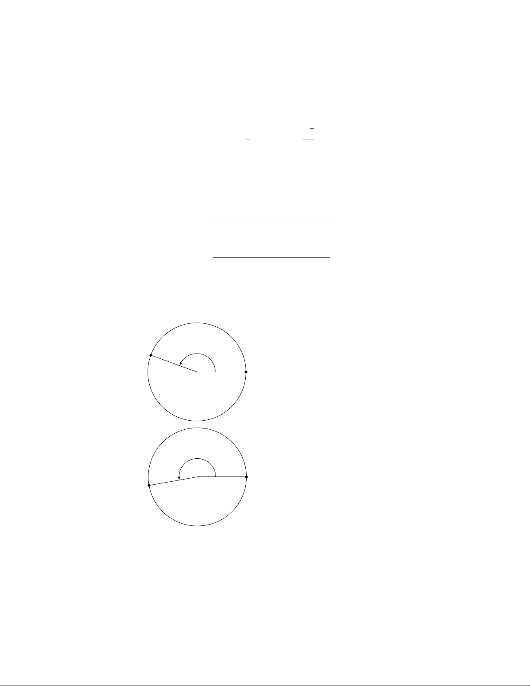
200π≈209 ·3+1.3. Because 1
4·3<1.3<1
2·3, the blue dot will be
between two pink dots: one of the pink dots will be at the midpoint of
two red dots, and the second pink dot will be directly behind the first.
Page 114
1. The calculator was in radian mode, since sin(1r)≈0.8415, while sin(1◦)≈
0.0175.
2.
x(in radians) sin xDifference (approx.)
0.2 0.19867 1.33 ×10−3
0.15 0.14944 5.62 ×10−4
0.05 0.04998 2.08 ×10−5
In all cases, x > sin x.
3. In the below table, the difference being calculated is x−x3/6−sin x.
x(in radians) sin x x −x3/6 Difference (approx.)
0.2 0.1986693 0.1986667 −2.66 ×10−6
0.15 0.1494381 0.1494375 −6.32 ×10−7
0.05 0.0499792 0.0499792 −2.60 ×10−9
4. sin 10◦≈0.174, and 10/60 ≈0.167, so the error in the approximation is
0.007.
5. (a)
sin 0.1≈0.1−0.13
6=1
10 −1
6000 =599
6000
Error: sin 0.1 is greater than 599/6000 by 8.33 ×10−8.
(b)
sin 0.1◦= sin π
1800 ≈π
1800 ≈3.14
1800 =157
90000
Error: sin 0.1◦is greater than 157/90000 by 8.84 ×10−7.
6. (a) sin 1000◦≈ −0.9848
(b) sin 1000r≈0.8269
7. (a) sin(sin 1000r)≈0.7358
(b) sin 3.14r≈0.00159
8. Let ε=π/2−1.5707 ≈9.6×10−5.
cos 1.5707 = cos π
2−ε= sin ε < ε < 0.0001
49
Page 116
1. Using the graph below
x
y
−1π1π2π
−1
0
1
7π/5−3π/7
(a) sin 7π/5 is negative because π < 7π/5<2π.
Estimated x≈ −1 (actual is −0.9511)
(b) sin −3π/7 is negative because −π < −3π/7<0.
Estimated x≈ −1 (actual is −0.9749)
(c) By symmetry, sin (π−π/6) = sin 5π/6=1/2. By periodicity, sin (2π+π/6) =
sin 13π/6 = 1/2. In general, sin x= 1/2 when x=π/6 + 2πn or
x= 5π/6+2πn, where nis an integer.
(d) Draw a line at y= sin(π/12) ≈0.26 and then estimate the location of
the intersections with the sine wave.
x=π/12,11π/12,25π/12, . . .
≈0.26,2.88,6.54, . . .
x
y
−1π1π2π
−1
0
1
0.26 2.88
(e) Draw a line at y= 0.8 and then estimate the location of the intersec-
tions with the sine wave. x≈0.93,2.21,7.21, . . .
x
y
−1π1π2π
−1
0
1
0.93 2.21
50
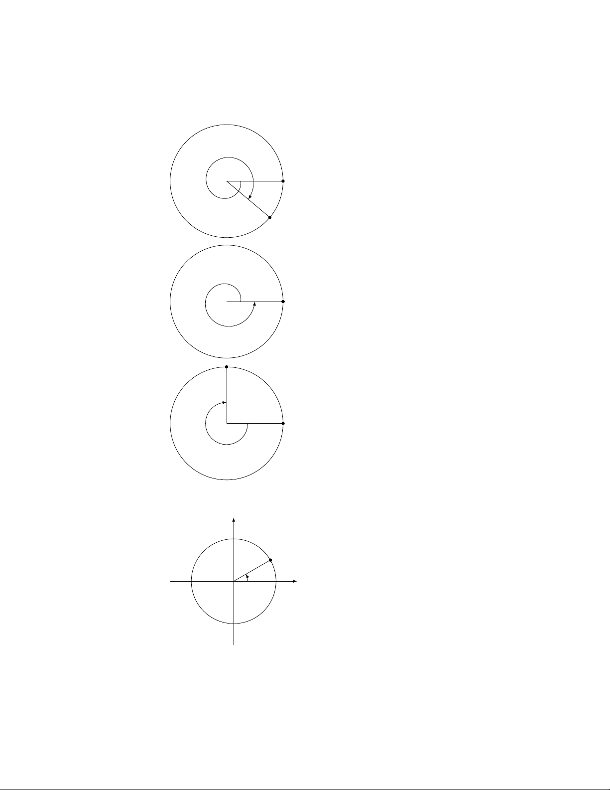
Alternatively, notice that sin π/4 = √2/2≈0.70 and sin π/3 = √3/2≈
0.85. Taking a weighted average, we can estimate that the sine of
1
3·π
4+2
3·π
3=11π
36
is approximately 0.8. Then, based on the properties of the sine function,
25π/36 and 83π/36 should also have sines of approximately 0.8.
Note: For parts (a) and (b) of the above exercise, we can use the approx-
imation cos x≈1−1
2x2to get better estimates. This approximation can be
derived from the approximation sin x≈xusing the identity sin2x+ cos2x= 1.
Let us suppose that xis a positive angle close to zero. Replacing sin xwith
xin the aforementioned identity, we get cos x≈√1−x2. Using the binomial
approximation, (1 + z)α≈1 + αz, we arrive at the desired approximation for
cos x:
cos x≈p1−x2=1 + −x21/2≈1−1
2x2.
For part (a), we get the estimate
sin 7π
5=−sin 2π
5=−sin π
2−π
10=−cos π
10 ≈1
2π
102
−1≈1
20−1 = −0.95.
For part (b), we get the estimate
sin −3π
7=−sin 3π
7=−sin π
2−π
14=−cos π
14 ≈1
2π
142
−1≈1
40−1 = −0.975.
Both of these estimates improve upon the first-order approximation of −1.
Page 120
1. Results are written to 5 decimal places.
α(radians) α(degrees) sin α
1 57.29578 0.84147
0.5 28.64789 0.47943
0.2 11.45916 0.19867
0.1 5.72958 0.09983
0.01 0.57296 0.01000
0.02 1.14592 0.02000
0.001 0.05730 0.00100
0.002 0.11459 0.00200
0.005 0.28648 0.00500
51
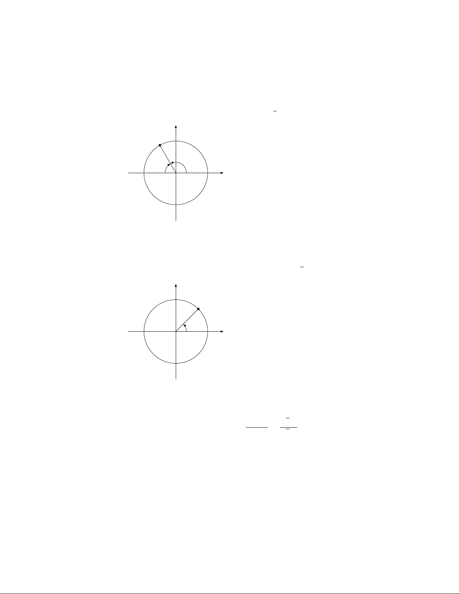
2. Since sin x≈xfor angles close to zero (when xis in radians), sin 0.00123456 ≈
0.00123456. Since x > sin xfor positive angles, we know this is an overesti-
mate. The calculator result is 0.0012345597, so our estimate is accurate to
7 decimal places.
3. (a) Results are written to 5 decimal places.
α α −α3/6 sin α
1 0.83333 0.84147
0.5 0.47917 0.47943
0.2 0.19867 0.19867
0.1 0.09983 0.09983
0.05 0.04998 0.04998
0.01 0.00999 0.00999
0.001 0.00099 0.00099
(b) Recall that we can multiply the degree measure of an angle by π/180
to get the radian measure, so we simply replace αby πD/180 in our
approximation. This gives
sin D≈πD
180 −1
6πD
1803
=πD
180 −π3D3
34992000
For D= 1◦, the above approximation gives sin 1◦≈0.017421, while the
calculator result is 0.017452. This is an underestimate by 3.1×10−5.
4. Using the fact that α=πD/180 from the previous part, the largest possible
error for an angle measured in degrees is given by
1
120 πD
1805
=π5D5
22674816000000.
5.
x5/120 <0.001
x5<0.12
x < 5
√0.12
x < 0.65438
6. The signs are alternating between terms, so the third term should be positive.
The exponent of xincreases by two in each successive term, so the third
term should have an exponent of 5.
The denominator of first term is 1! and the denominator of second term is
3!. Therefore the denominator of the fifth term should be 5! = 120.
52
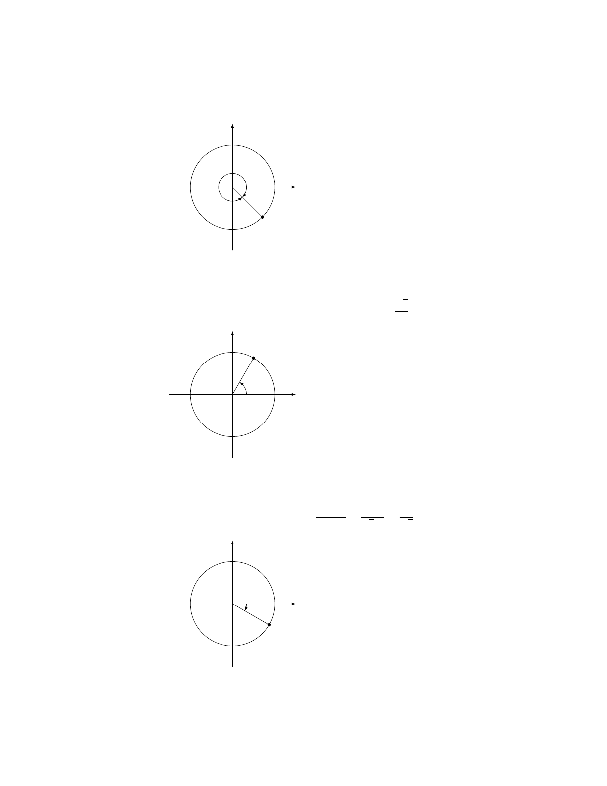
Therefore, the third term is
+x5
120.
Hint: This is the Taylor Series for sin x.
Note: !is used to denote the factorial function, where the factorial of a
positive integer nis the product of all positive integers less than or equal to
n.
7. The aliens appear to take clockwise angles to be positive, which is the op-
posite of the convention we typically use. Furthermore, it is not clear that
the aliens even use counterclockwise angles since all of the examples only
feature clockwise angles. This could mean that the aliens only work with
non-negative (or in our system, non-positive) angles.
The aliens do consider angles corresponding to rotations greater than a full
rotation, as we do. φseems to be used to denote one complete rotation.
Comparing to our system, φ=−2πradians.
8. It is easier to rewrite each of the radian angle measurements as multiples of
πsince the first quadrant contains angles between 0 and 0.5π, the second
quadrant contains angles between 0.5πand π, etc.
Angle in radians Angle in terms of πQuadrant
1 0.318π1
2 0.636π2
3 0.954π2
4 1.273π3
5 1.591π4
6 1.909π4
1000 radians is approximately equal to 318.31π, which represents 159 full
rotations with a remainder of 0.31πradians. Thus an angle of 1000 radians
lies in the first quadrant.
1000 degrees corresponds to 1000/360 ≈2.78 rotations, which represents 2
whole rotations and a further 0.78 of a rotation, which is slightly more than
a 3/4 rotation. Thus, an angle of 1000 degrees lies in the fourth quadrant.
9. Approximately 1/4 of the angles lie in each quadrant. See the solution below
the question in the textbook.
Chapter 6: The Addition Formulas
Page 123
1.
53
α β sin αsin βsin α+ sin βsin (α+β)
60◦30◦√3/2 1/2√3+1/2 sin 90◦= 1
π/4π/4√2/2√2/2√2 + √2/2 = √2 sin π/2=1
π/6π/3 1/2√3/21 + √3/2 sin π/2=1
2. For these values of αand β, sin αand sin βare both at least 1/2. Further-
more, at least one of sin αand sin βis strictly greater than 1/2. Therefore,
sin α+ sin β > 1
2+1
2= 1 = sin (α+β).
3. (a)
sin 60◦+ sin 30◦=√3
2+1
2
sin (60◦+ 30◦) = sin 90◦= 1
This identity is not correct.
(b)
sin (60◦−30◦) = sin 30◦=1
2
sin 60◦−sin 30◦=√3
2−1
2
This identity is not correct.
(c)
sin260◦−sin230◦= √3
2!2
−1
22
=3
4−1
4=1
2
sin (60◦+ 30◦) sin (60◦−30◦) = sin 90◦·sin 30◦= 1 ·1
2=1
2
This identity is correct for the given angles.
4. See Chapter 2, Section 12 and the Appendix of Chapter 2 to review some of
the geometry used in this solution.
(a) Because ABC is subtended by the diameter AC,ABC is a right
angle and △ABC is a right triangle (this fact is known as Thales’s
Theorem). Therefore, sin αis equal to the length of the opposite side
(BC) divided by the length of the hypotenuse (AC). AC is a diameter
of the circle, so it has length 1. Thus, we have that sin αis simply equal
to BC.
A similar argument shows that △ADC is a right triangle with hy-
potenuse AC of length 1, which implies that sin β=DC
54
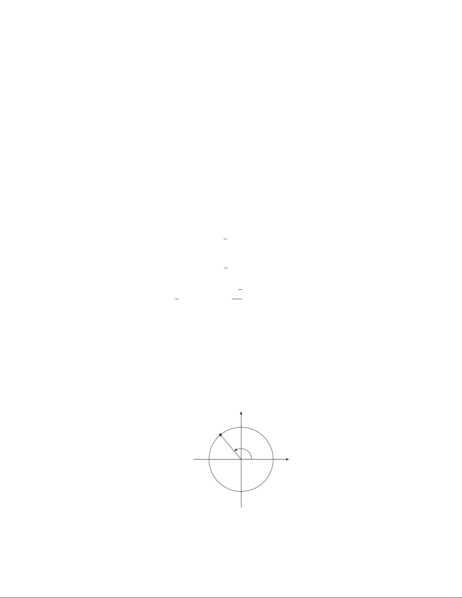
(b) Recall that chords of congruent circles which subtend equal angles are
themselves equal. This implies that BC in the diagram of part (a) is
equal to BC in the diagram of part (b) because in both diagrams, the
chord BC subtends an angle of measure α. Similarly, DC is the same
in both diagrams because in both diagrams, the chord DC subtends an
angle of measure β. Therefore, BC is still equal to sin α, and DC is
still equal to sin β.
(c) From part (b) above, we can conclude that a chord which subtends an
inscribed angle with measure αin a circle with diameter 1 has length
sin α. Thus, we draw BD, the chord which subtends BAD in both
figures and which consequently has length sin (α+β).
Note that the above reasoning implies that the sine of an angle with measure
less than 180◦cannot exceed 1 since the diameter is the longest chord in a
circle.
5. Recall that the sine of any angle is at most 1. Therefore,
sin 105◦≤1 = 1
2+1
2<sin 45◦+ sin 60◦,
which shows that sin 105◦cannot equal sin 45◦+ sin 60◦.
Page 125
1. Addition formula for sine:
sin (60◦+ 30◦) = sin 60◦cos 30◦+ cos 60◦sin 30◦
=√3
2·√3
2+1
2·1
2
=3
4+1
4
= 1
= sin 90◦
Addition formula for cosine:
cos (60◦+ 30◦) = cos 60◦cos 30◦−sin 60◦sin 30◦
=1
2·√3
2−√3
2·1
2
=√3
4−√3
4
= 0
= cos 90◦
55
Difference formula for sine:
sin (60◦−30◦) = sin 60◦cos 30◦−cos 60◦sin 30◦
=√3
2·√3
2−1
2·1
2
=3
4−1
4
=1
2
= sin 30◦
Difference formula for cosine:
cos (60◦−30◦) = cos 60◦cos 30◦+ sin 60◦sin 30◦
=1
2·√3
2+√3
2·1
2
=√3
4+√3
4
=√3
2
= cos 30◦
2. Addition formula for sine (α= 0):
sin (0 + β) = sin 0 cos β+ cos 0 sin β
= 0 ·cos β+ 1 ·sin β
= sin β
Addition formula for cosine (α= 0):
cos (0 + β) = cos 0 cos β−sin 0 sin β
= 1 ·cos β−0·sin β
= cos β
Difference formula for sine (α= 0):
sin (0 −β) = sin 0 cos β−cos 0 sin β
= 0 ·cos β−1·sin β
=−sin β
Notice that this demonstrates that the sine function is odd.
Difference formula for cosine (α= 0):
cos (0 −β) = cos 0 cos β+ sin 0 sin β
= 1 ·cos β+ 0 ·sin β
= cos β
56

Notice that this demonstrates that the cosine function is even.
Addition formula for sine (β= 0):
sin (α+ 0) = sin αcos 0 + cos αsin 0
= sin α·1 + cos α·0
= sin α
Addition formula for cosine (β= 0):
cos (α+ 0) = cos αcos 0 −sin αsin 0
= cos α·1−sin α·0
= cos α
Difference formula for sine (β= 0):
sin (α−0) = sin αcos 0 −cos αsin 0
= sin α·1−cos α·0
= sin α
Difference formula for cosine (β= 0):
cos (α+ 0) = cos αcos 0 + sin αsin 0
= cos α·1 + sin α·0
= cos α
3. Following the hint, we notice that in a right triangle, the side opposite one
of the acute angles is the side adjacent to the other acute angle. Thus, if
α+β=π/2, then sin α= cos βand sin β= cos α(see also Chapter 1,
Section 4).
sin (α+β) = sin αcos β+ cos αsin β
= sin αsin α+ cos αcos α
= sin2α+ cos2α
= 1
4. Addition formula for sine:
sin π
4+π
4= sin π
4cos π
4+ cos π
4sin π
4
=√2
2·√2
2+√2
2·√2
2
=1
2+1
2
= 1
= sin π
2
57
Addition formula for cosine:
cos π
4+π
4= cos π
4cos π
4−sin π
4sin π
4
=√2
2·√2
2−√2
2·√2
2
=1
2−1
2
= 0
= cos π
2
5. Recall that (A±B)2=A2±2AB +B2.
(sin αcos β+ cos αsin β)2+ (cos αcos β−sin αsin β)2
= sin2αcos2β+ 2 sin αcos βcos αsin β+ cos2αsin2β+
cos2αcos2β−2 cos αcos βsin αsin β+ sin2αsin2β
= sin2αcos2β+ cos2αsin2β+ cos2αcos2β+ sin2αsin2β
= sin2αcos2β+ sin2β+ cos2αsin2β+ cos2β
= sin2α·1 + cos2α·1
= 1
6. After expanding using the identity (A+B) (A−B) = A2−B2, we cleverly
“add by zero” to get the desired result.
(sin αcos β+ cos αsin β) (sin αcos β−cos αsin β)
= sin2αcos2β−cos2αsin2β
= sin2αcos2β+ sin2αsin2β−sin2αsin2β−cos2αsin2β
= sin2αcos2β+ sin2β−sin2βsin2α+ cos2α
= sin2α·1−sin2β·1
= sin2α−sin2β
Page 129
1.
2.
58
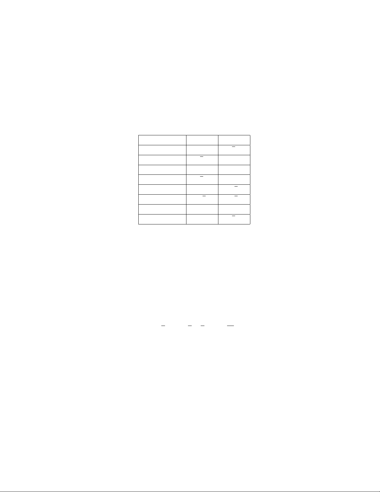
Page 131
1.
sin (30◦+ 30◦) = sin 30◦cos 30◦+ cos 30◦sin 30◦
=1
2·√3
2+√3
2·1
2
=√3
4+√3
4
=√3
2
= sin 60◦
cos (30◦+ 30◦) = cos 30◦cos 30◦−sin 30◦sin 30◦
=√3
2·√3
2−1
2·1
2
=3
4−1
4
=1
2
= cos 60◦
2. Assuming αand βare acute angles:
sin α=3
5=⇒cos α=p1−sin2α=q1−(3/5)2=4
5
sin β=5
13 =⇒cos β=q1−sin2β=q1−(5/13)2=12
13
sin (α+β) = sin αcos β+ cos αsin β
=3
5·12
13 +4
5·5
13
=36
65 +20
65
=56
65
59
cos (α+β) = cos αcos β−sin αsin β
=4
5·12
13 −3
5·5
13
=48
65 −15
65
=33
65
3.
sin 75◦= sin (45◦+ 30◦)
= sin 45◦cos 30◦+ cos 45◦sin 30◦
=√2
2·√3
2+√2
2·1
2
=√6 + √2
4
cos 75◦= cos (45◦+ 30◦)
= cos 45◦cos 30◦−sin 45◦sin 30◦
=√2
2·√3
2−√2
2·1
2
=√6−√2
4
4.
sin 15◦= sin (45◦−30◦)
= sin 45◦cos 30◦−cos 45◦sin 30◦
=√2
2·√3
2−√2
2·1
2
=√6−√2
4
cos 15◦= cos (45◦−30◦)
= cos 45◦cos 30◦+ sin 45◦sin 30◦
=√2
2·√3
2+√2
2·1
2
=√6 + √2
4
60

Notice that 75◦and 15◦are complementary angles, so we know sin 75◦=
cos 15◦and sin 15◦= cos 75◦.
5. (a) Yes, let α=β=π/4.
cos π
4+π
4= cos π
4cos π
4−sin π
4sin π
4
=√2
2·√2
2−√2
2·√2
2
=1
2−1
2
= 0
More generally, we could suppose α+β=π/2 and follow the approach
in Exercise 3 of Section 2 earlier in this chapter.
(b) If αand βare acute angles, then 0 < α +β < π. Using the unit circle,
we can see that sin (α+β) must be positive since the angle α+βlies
in the upper-half of the plane, where the sine function is positive.
(c) sin (α+β) = sin αcos β+ cos αsin βis positive when αand βare acute
angles since the sum and product of positive real numbers is also posi-
tive.
cos (α+β) need not be positive. As shown in part (a) of this exercise,
cos (α+β) can equal 0. Furthermore, cos (α+β) can be negative. Let
α=β=π/3. Then, assuming that we can extend the cosine addition
formula to angles αand βsuch that α+βis obtuse,
cos π
3+π
3= cos π
3cos π
3−sin π
3sin π
3
=1
2·1
2−√3
2·√3
2
=1
4−3
4
=−1
2
6. As we saw in Exercise 1 of Section 1 of this chapter, sin α+ sin βdoes
not equal sin (α+β) in general. A similar table can be used to show that
sin α−sin βdoes not equal sin (α−β) in general.
7. This is not a coincidence. The identity holds true even when substituting
more “arbitrary” values in for αand β. For example, using α= 37◦and
β= 19◦, we find that both sin2α−sin2βand sin (α+β) sin (α−β) are
equal to approximately 0.2562.
61

8. You may also refer to the proof in Exercise 6 of Section 2 of this chapter.
sin (α+β) sin (α−β) = (sin αcos β+ cos αsin β) (sin αcos β−cos αsin β)
= sin2αcos2β−cos2αsin2β
= sin2αcos2β+ sin2αsin2β−sin2αsin2β−cos2αsin2β
= sin2αcos2β+ sin2β−sin2βsin2α+ cos2α
= sin2α·1−sin2β·1
= sin2α−sin2β
9. This proof is nearly identical to the one in the previous part. We just make a
small modification in how we “add by zero” in order to obtain to the desired
result.
sin (α+β) sin (α−β) = (sin αcos β+ cos αsin β) (sin αcos β−cos αsin β)
= sin2αcos2β−cos2αsin2β
= sin2αcos2β+ cos2αcos2β−cos2αcos2β−cos2αsin2β
= cos2βsin2α+ cos2α−cos2αcos2β+ sin2β
= cos2β·1−cos2α·1
= cos2β−cos2α
10. We apply the sine addition formula in reverse.
sin 18◦cos 12◦+ cos 18◦sin 12◦= sin (18◦+ 12◦)
= sin 30◦
=1
2
11. (a) Since we have not proved that the sine addition formula works for all
angles αand β, we use properties of the sine and cosine functions to
avoid working with angles larger than 90◦.
sin 113◦cos 307◦+ cos 113◦sin 307◦
= sin (180◦−67◦) cos (360◦−53◦) + cos (180◦−67◦) sin (360◦−53◦)
= sin 67◦cos 53◦+ (−cos 67◦) (−sin 53◦)
= sin (67◦+ 53◦)
= sin 120◦
= sin 60◦
=√3
2
(b) Plugging into a calculator,
sin 113◦cos 307◦+ cos 113◦sin 307◦≈0.866 ≈√3
2= sin 60◦
62
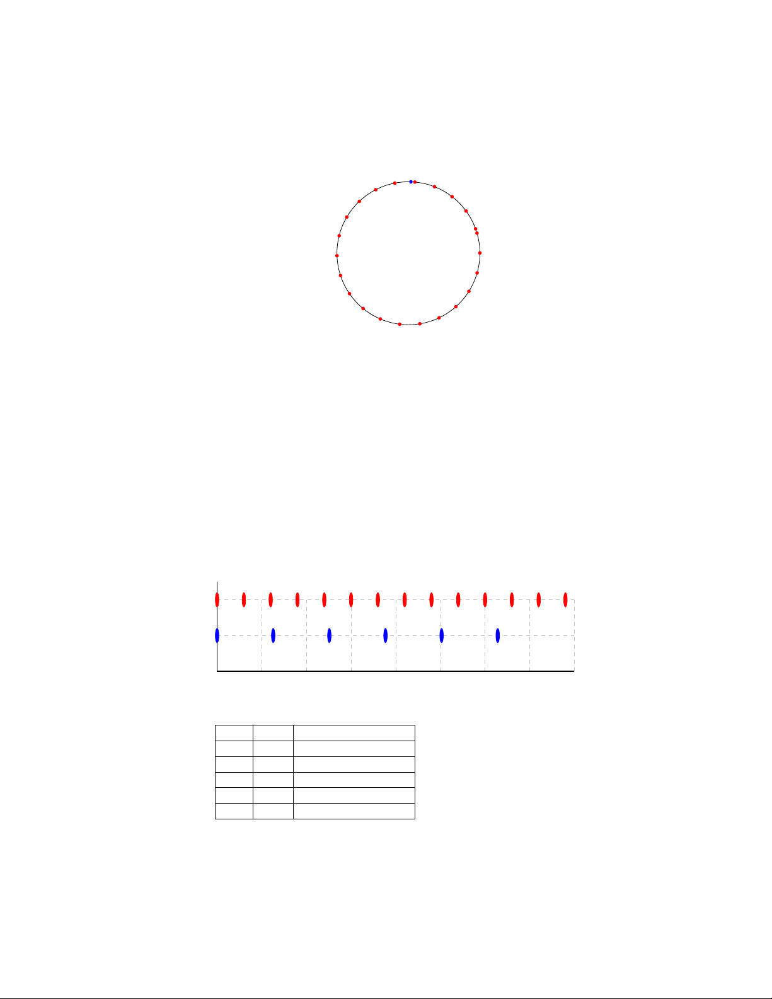
(c) Assuming that the sine addition formula does work for non-acute angles,
we arrive at the same result.
sin 113◦cos 307◦+ cos 113◦sin 307◦= sin (113◦+ 307◦)
= sin 420◦
= sin 60◦
=√3
2
12. We can use the addition formulas for sine and cosine by rewriting 2αas
α+α.
sin 2αcos α−cos 2αsin α= sin (α+α) cos α−cos (α+α) sin α
= (sin αcos α+ cos αsin α) cos α−(cos αcos α−sin αsin α) sin α
= sin αcos2α+ sin αcos2α−sin αcos2α+ sin3α
= sin αcos2α+ sin3α
= sin αcos2α+ sin2α
= sin α
13.
sin (α+β) sin β+ cos (α+β) cos β= (sin αcos β+ cos αsin β) sin β+ (cos αcos β−sin αsin β) cos β
= sin αsin βcos β+ sin2βcos α+ cos αcos2β−sin αsin βcos β
= sin2βcos α+ cos αcos2β
= cos αsin2β+ cos2β
= cos α
14.
sin (α+β)−cos αsin β
cos (α+β) + sin αsin β=sin αcos β+ cos αsin β−cos αsin β
cos αcos β−sin αsin β+ sin αsin β
=sin αcos β
cos αcos β
=sin α
cos α
= tan α
15.
sin α+π
4= sin αcos π
4+ cos αsin π
4
= sin α·√2
2+ cos α·√2
2
=√2
2(sin α+ cos α)
63
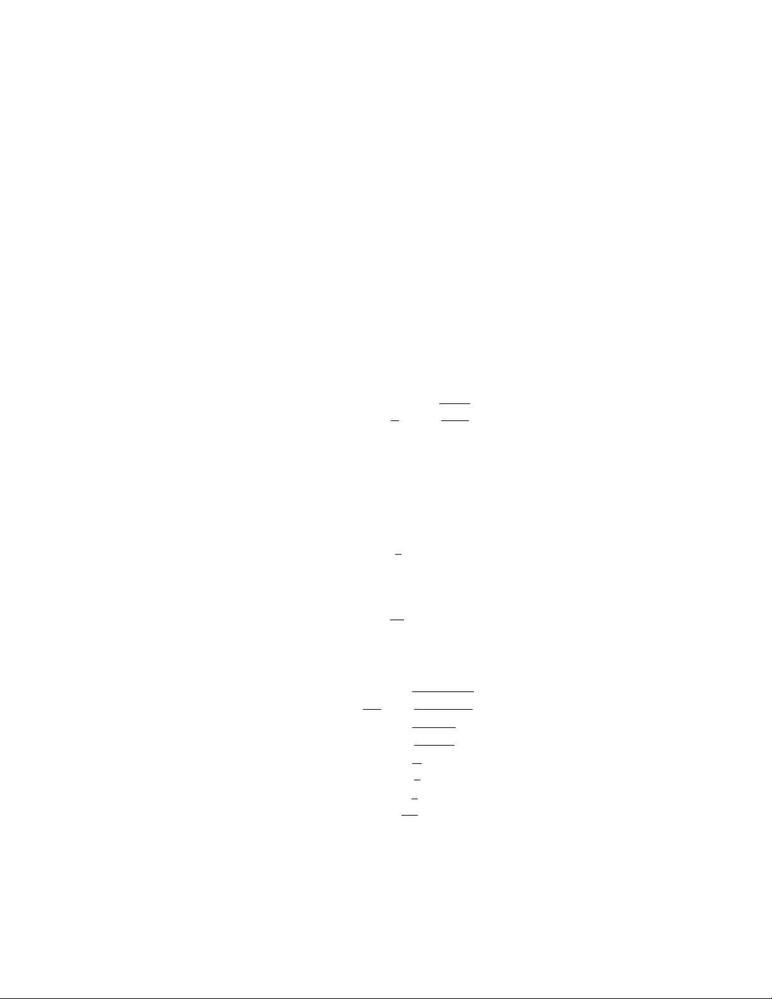
16.
cos (α+β)
cos αcos β=cos αcos β−sin αsin β
cos αcos β
= 1 −sin αsin β
cos αcos β
= 1 −sin α
cos α·sin β
cos β
= 1 −tan αtan β
17. Applying the law of cosines, we have that (b1+b2)2=c2
1+c2
2−2c1c2cos (α+β).
Solving for cos (α+β), we get
cos (α+β) = c2
1+c2
2−(b1+b2)2
2c1c2
.
Before proceeding further, let’s establish some relationships between the
variables in the diagram. First, by the Pythagorean theorem, we have that
h2=c2
1−b2
1=c2
2−b2
2. Additionally, we can compute the sines and cosines
for the angles αand β:
sin α=b1
c1
,sin β=b2
c2
,cos α=h
c1
,cos β=h
c2
.
We can now simplify our expression for cos (α+β).
cos (α+β) = c2
1+c2
2−(b1+b2)2
2c1c2
=c2
1+c2
2−b2
1−2b1b2−b2
2
2c1c2
=2h2−2b1b2
2c1c2
=h2−b1b2
c1c2
=h
c1·h
c2−b1
c1·b2
c2
= cos αcos β−sin αsin β
Chapter 7: Trigonometric Identities
Page 141
1. (a) Yes
(b) No
64
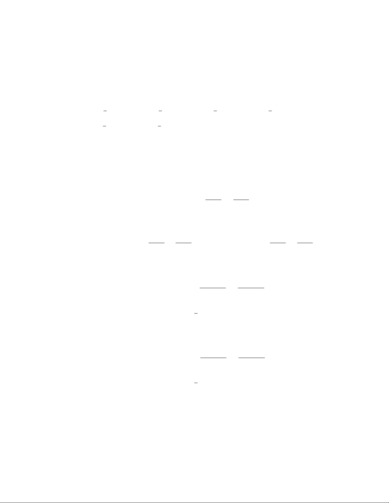
(c) Yes
(d) Yes
(e) No
(f) No
2. (a)
tan α=sin α
cos α
(b)
(1 + tan α) (1 −tan α)=1−tan2α
= 1 −sin2α
cos2α
=cos2α−sin2α
cos2α
(c)
tan α+ tan β
1−tan αtan β=tan α+ tan β
1−tan αtan β·cos αcos β
cos αcos β
=sin αcos β+ cos αsin β
cos αcos β−sin αsin β
(d)
tan2α+ cot2α=sin2α
cos2α+cos2α
sin2α
=sin4α+ cos4α
sin2αcos2α
(e)
tan αcot α=sin α
cos α·cos α
sin α
= 1
(f)
1 + tan2α= 1 + sin2α
cos2α
=cos2α+ sin2α
cos2α
=1
cos2α
65
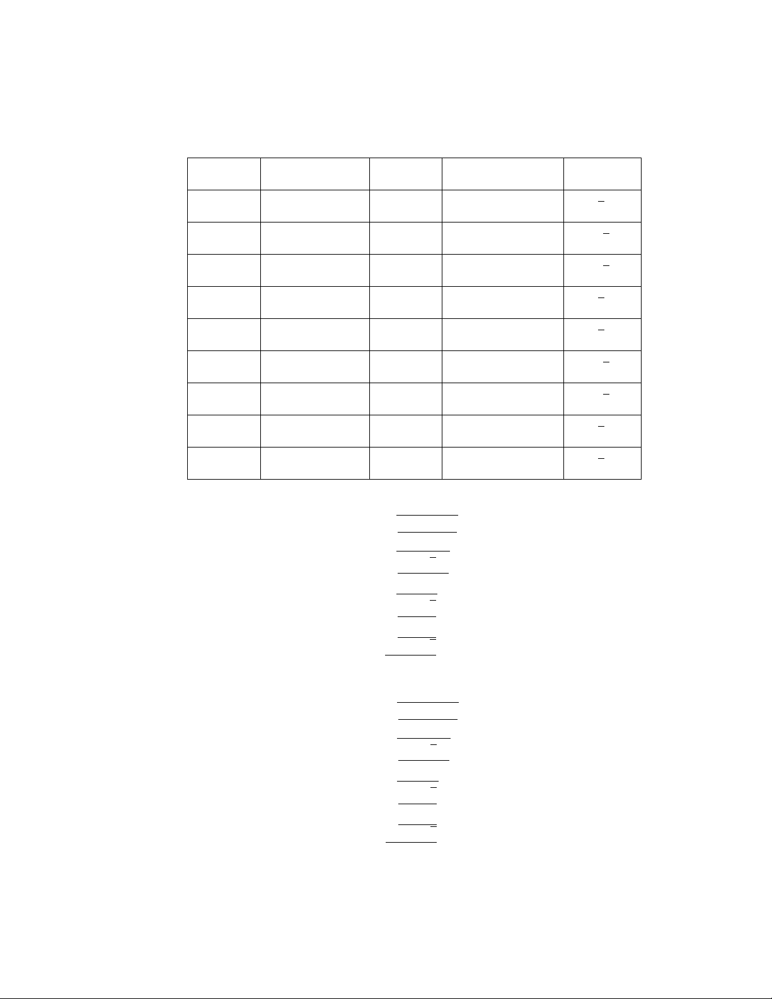
3. The Principle of Analytic Continuation does not apply because p1−sin2α
is not a rational trigonometric function. The identity is incorrect for α=
2π/3 as cos (2π/3) = −1/2, while q1−sin2(2π/3) = 1/2.
4. The Principle of Analytic Continuation does apply because both sin2α+
cos2αand 1 are rational trigonometric functions. The identity is correct for
α= 2π/3.
sin22π
3+ cos22π
3= √3
2!2
+1
22
=3
4+1
4= 1
Page 142
1. Since αand βare acute angles,
sin α=3
5=⇒cos α=p1−sin2α=s1−3
52
=4
5
sin β=5
13 =⇒cos β=q1−sin2β=s1−5
132
=12
13
sin (α+β) = sin αcos β+ cos αsin β
=3
5·12
13 +4
5·5
13
=36
65 +20
65
=56
65
cos (α+β) = cos αcos β−sin αsin β
=4
5·12
13 −3
5·5
13
=48
65 −15
65
=33
65
α+βlies in the first quadrant because sin (α+β) and cos (α+β) are both
positive.
2. Since αand βare acute angles,
sin α=4
5=⇒cos α=p1−sin2α=s1−4
52
=3
5
66

sin β=12
13 =⇒cos β=q1−sin2β=s1−12
132
=5
13
sin (α+β) = sin αcos β+ cos αsin β
=4
5·5
13 +3
5·12
13
=20
65 +36
65
=56
65
cos (α+β) = cos αcos β−sin αsin β
=3
5·5
13 −4
5·12
13
=15
65 −48
65
=−33
65
α+βlies in the second quadrant because sin (α+β) is positive and cos (α+β)
is negative.
3.
sin α=3
5=⇒cos α=±p1−sin2α=±s1−3
52
=±4
5
sin β=5
13 =⇒cos β=±q1−sin2β=±s1−5
132
=±12
13
cos α > 0, cos β > 0:
sin (α+β) = sin αcos β+ cos αsin β
=3
5·12
13 +4
5·5
13
=36
65 +20
65
=56
65
cos α > 0, cos β < 0:
sin (α+β) = sin αcos β+ cos αsin β
=3
5−12
13+4
5·5
13
=−36
65 +20
65
=−16
65
67

cos α < 0, cos β > 0:
sin (α+β) = sin αcos β+ cos αsin β
=3
5·12
13 +−4
5·5
13
=36
65 −20
65
=16
65
cos α < 0, cos β < 0:
sin (α+β) = sin αcos β+ cos αsin β
=3
5−12
13+−4
5·5
13
=−36
65 −20
65
=−56
65
There are four possible answers for sin (α+β).
4. (a)
sin 2π
3cos π
3−cos 2π
3sin π
3=√3
2·1
2−−1
2√3
2
=√3
4+√3
4
=√3
2
= sin π
3
= sin 2π
3−π
3
(b)
sin π
4cos 3π
4−cos π
4sin 3π
4=√2
2 −√2
2!−√2
2·√2
2
=−1
2−1
2
=−1
= sin −π
2
= sin π
4−3π
4
68
(c)
sin −π
6cos 3π
2−cos −π
6sin 3π
2=−1
2·0−√3
2(−1)
=√3
2
= sin π
3
= sin −5π
3
= sin −π
6−3π
2
5. Applying the identity
(A−B)2+ (A+B)2=A2−2AB +B2+A2+ 2AB +B2= 2A2+ 2B2,
we have that,
cos2(γ+δ) + cos2(γ−δ) = (cos γcos δ−sin γsin δ)2+ (cos γcos δ+ sin γsin δ)2
= 2 cos2γcos2δ+ 2 sin2γsin2δ.
Therefore,
cos2α+ cos22π
3+α+ cos22π
3−α= cos2α+ 2 cos22π
3cos2α+ 2 sin22π
3sin2α
= cos2α+ 2 1
4cos2α+ 2 3
4sin2α
=3
2cos2α+ sin2α
=3
2
6.
sin (x+y) + sin (x−y) = sin xcos y+ cos xsin y+ sin xcos y−cos xsin y
= sin xcos y+ sin xcos y
= 2 sin xcos y
7.
cos (x+y) + cos (x−y) = cos xcos y−sin xsin y+ cos xcos y+ sin xsin y
= cos xcos y+ cos xcos y
= 2 cos xcos y
69
8. Since (A−B)(A+B) = A2−B2,
cos (x+y) cos (x−y) = (cos xcos y−sin xsin y) (cos xcos y+ sin xsin y)
= cos2xcos2y−sin2xsin2y
9. Since (A+B)(A−B) = A2−B2,
sin (x+y) sin (x−y) = (sin xcos y+ cos xsin y) (sin xcos y−cos xsin y)
= sin2xcos2y−cos2xsin2y
10.
cos (x+y) cos (x−y)−sin (x+y) sin (x−y) = cos2xcos2y−sin2xsin2y−sin2xcos2y−cos2xsin2y
= cos2xcos2y+ sin2y−sin2xsin2y+ cos2y
= cos2x−sin2x
11.
cos 2x= cos (x+x)
= cos xcos x−sin xsin x
= cos2x−sin2x
There is no error, because cos 2x= cos2x−sin2x.
12.
cos (α+β) cos β+ sin (α+β) sin β= (cos αcos β−sin αsin β) cos β+ (sin αcos β+ cos αsin β) sin β
= cos αcos2β−sin αsin βcos β+ sin αsin βcos β+ sin2βcos α
= cos αcos2β+ sin2βcos α
= cos αcos2β+ sin2β
= cos α
Alternatively, by applying the cosine difference formula in reverse,
cos (α+β) cos β+ sin (α+β) sin β= cos (α+β−β) = cos α
70
Page 144
1.
tan 7π
6+5π
3=
tan 7π
6+ tan 5π
3
1−tan 7π
6tan 5π
3
=1/√3−√3
1−1/√3−√3
=1/√3−√3
2
=1/√3−√3
2·√3
√3
=1−3
2√3
=−1
√3
= tan −π
6
= tan 17π
6
= tan 7π
6+5π
3
2. Because the tangent function is odd, we know tan −β=−tan β.
tan (α−β) = tan (α+ (−β))
=tan α+ tan −β
1−tan αtan −β
=tan α−tan β
1 + tan αtan β
3.
tan π
4+α=
tan π
4+ tan α
1−tan π
4tan α
=1 + tan α
1−tan α
71
4.
tan π
4−α=
tan π
4−tan α
1 + tan π
4tan α
=1−tan α
1 + tan α
5. Since β=π/4−α,
(1 + tan α) (1 + tan β) = (1 + tan α)1 + tan π
4−α
= (1 + tan α)1 + 1−tan α
1 + tan α
= 1 + tan α+ 1 −tan α
= 2
Alternatively, since tan (α+β) = tan π/4 = 1,
(1 + tan α) (1 + tan β) = 1 + tan α+ tan β+ tan αtan β
= 1 + (tan α+ tan β)1−tan αtan β
1−tan αtan β+ tan αtan β
= 1 + (1 −tan αtan β)tan α+ tan β
1−tan αtan β+ tan αtan β
= 1 + (1 −tan αtan β) tan (α+β) + tan αtan β
= 1 + 1 −tan αtan β+ tan αtan β
= 2
6.
tan (α+β+γ) = tan (α+β) + tan γ
1−tan (α+β) tan γ
=
tan α+ tan β
1−tan αtan β+ tan γ
1−tan α+ tan β
1−tan αtan βtan γ
=
tan α+ tan β
1−tan αtan β+ tan γ
1−tan α+ tan β
1−tan αtan βtan γ·1−tan αtan β
1−tan αtan β
=tan α+ tan β+ tan γ(1 −tan αtan β)
1−tan αtan β−(tan α+ tan β) tan γ
=tan α+ tan β+ tan γ−tan αtan βtan γ
1−tan αtan β−tan αtan γ−tan βtan γ
72

7. Since tan (α+β+γ) = tan π= 0, from the previous part, we have
tan α+tan β+tan γ−tan αtan βtan γ= 0 =⇒tan α+tan β+tan γ= tan αtan βtan γ.
This is because if a fraction equals zero, its numerator must be zero.
8. First, applying the tangent addition formula,
tan 3α= tan (2α+α) = tan 2α+ tan α
1−tan 2αtan α=⇒tan 2α+tan α= tan 3α(1 −tan 2αtan α).
Therefore,
tan 3α−tan 2α−tan α= tan 3α−tan 3α(1 −tan 2αtan α) = tan 3αtan 2αtan α.
tan αis not defined for α=π
2+nπ. Therefore, tan 2αis not defined for
α=π
4+nπ
2and tan 3αis not defined for α=π
6+nπ
3.
Page 147
1. (a) Since sin2α+ cos2α= 1, we know cos α=q1−(7
25 )2(and cannot be
the negative version because cos αis given as positive).
Thus sin 2α= 2 sin αcos α= 2 ·7
25 ·q1−(7
25 )2=336
625 .
And cos 2α= 1 −2 sin2α= 1 −2( 7
25 )2=527
625 .
(b) This part is similar except that we use the negative version of cosine,
namely cos α=−q1−(7
25 )2.
Thus sin 2α= 2 sin αcos α=−336
625 .
However, cosine value remains the same: cos 2α= 1 −2 sin2α= 1 −
2( 7
25 )2=527
625 .
2. Firstly, sin 2α= 2 sin αcos α. In other words, the sine value will be a product
of rational numbers, so it will also be rational. Similarly, cos 2α= 2 cos2α−1
will be rational because cos αis rational. Exercise 1 confirms this result.
3. Let’s use the double angle formula cos 2α= 2 cos2α−1.
cos 2α= cos2α=⇒2 cos2α−1 = cos2α=⇒cos2α= 1 =⇒cos α=±1
cos αhas a magnitude of 1 precisely when αis an integer multiple of π, so
the student’s angle must have also been an integer multiple of π.
4. We start with the given equation:
sin α+ cos α= 0.2
sin2α+ 2 sin αcos α+ cos2α= 0.04 (Squared both sides.)
1 + 2 sin αcos α= 0.04
2 sin αcos α=−0.96
Note that that is simply sin 2α. Hooray!
73
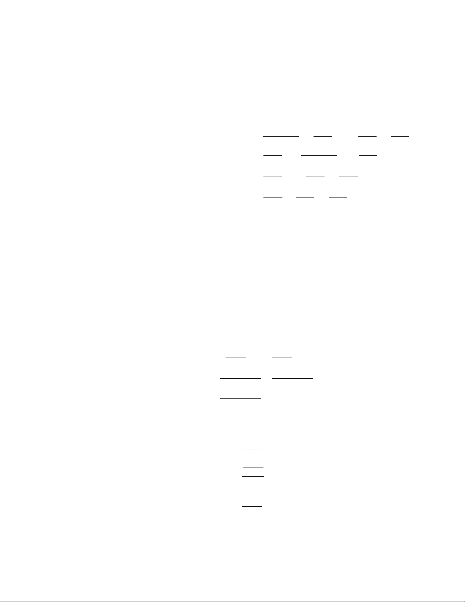
5. We can follow a very similar strategy here to find 1 −2 sin αcos α= 0.09.
Then sin 2α= 2 sin αcos α= 0.91.
6.
cos 2αcos α+ sin 2αsin α=2 cos2α−1cos α+ 2 sin αcos αsin α
= cos α2 cos2α−1 + 2 sin2α
= cos α(2 −1)
= cos α
Alternatively, we may use the cosine difference formula.
cos 2αcos α+ sin 2αsin α= cos (2α−α) = cos α
7. Applying the sine addition formula,
sin 2αcos α+ cos 2αsin α= sin (2α+α) = sin 3α
Applying the sine subtraction formula,
sin 4αcos α−cos 4αsin α= sin (4α−α) = sin 3α
Since both sides of the identity are equal to sin 3α, the identity is true.
8. Yes, the book asked you to prove something incorrect! For counterexample,
consider that cos 2αcan be negative but cos2αis never negative. However,
we can prove a relationship.
Recall that cos 2α= cos2α−sin2α. However, sin2α≥0 since it’s a square.
sin2α≥0
−sin2α≤0
cos2α−sin2α≤cos2α
cos 2α≤cos2α
9.
sin α
2−cos α
22
= sin2α
2−2 sin α
2cos α
2+ cos2α
2
= 1 −sin α
74

10. Following the hint, we compute the value of cos 10◦sin 10◦sin 50◦sin 70◦.
Mcos 10◦= cos 10◦sin 10◦sin 50◦sin 70◦
=1
2sin 20◦sin 50◦sin 70◦
=1
2cos 70◦sin 50◦sin 70◦
=1
4sin 140◦sin 50◦
=1
4sin 40◦sin 50◦
=1
4cos 50◦sin 50◦
=1
8sin 100◦
=1
8sin 80◦
=1
8cos 10◦
Since Mcos 10◦=1
8cos 10◦, we have that the value of the original expression
Mis equal to 1
8.
11. We begin by computing sin 20◦cos 20◦cos 40◦cos 80◦.
sin 20◦cos 20◦cos 40◦cos 80◦=1
2sin 40◦cos 40◦cos 80◦
=1
4sin 80◦cos 80◦
=1
8sin 160◦
=1
8sin 20◦
This implies that cos 20◦cos 40◦cos 80◦= 1/8.
12. We begin by computing cos π/10 sin π/10 sin π/5.
cos π
10 sin π
10 cos π
5=1
2sin π
5cos π
5
=1
4sin 2π
5
=1
4cos π
10
This implies that sin π/10 cos π/5=1/4.
75
Page 148
1.
cos 3α= cos (2α+α)
= cos 2αcos α−sin 2αsin α
=2 cos2α−1cos α−2 sin αcos αsin α
= 2 cos3α−cos α−2 sin2αcos α
= 2 cos3α−cos α−21−cos2αcos α
= 4 cos3α−3 cos α
2.
sin 3α= 3 sin α−4 sin3α
= 3 3
5−43
53
=9
5−4·27
125
=117
125
If sin α= 3/5, then cos α=±4/5. Therefore,
cos 3α= 4 cos3α−3 cos α
= 4 ±4
53
−3±4
5
=±256
125 ∓12
5
=∓44
125
3. If cos α= 4/5, then sin α=±3/5. Therefore,
sin 3α= 3 sin α−4 sin3α
= 3 ±3
5−4±3
53
=±9
5∓4·27
125
=±117
125
76

cos 3α= 4 cos3α−3 cos α
= 4 4
53
−34
5
=256
125 −12
5
=−44
125
4. (a)
cos 4α= 2 cos22α−1
= 2 2 cos2α−12−1
= 2 4 cos4α−4 cos2α+ 1−1
= 8 cos4α−8 cos2α+ 1
(b)
cos 4α= 1 −2 sin22α
= 1 −8 sin2αcos2α
= 1 −8 sin2α1−sin2α
= 1 −8 sin2α+ 8 sin4α
5.
sin 3αcos α−cos 3αsin α=3 sin α−4 sin3αcos α−4 cos3α−3 cos αsin α
= 3 sin αcos α−4 sin3αcos α−4 cos3αsin α+ 3 sin αcos α
= 2 sin αcos α3−2 sin2α−2 cos2α
= 2 sin αcos α(3 −2)
= sin 2α
Alternatively, applying the sine difference formula,
sin 3αcos α−cos 3αsin α= sin (3α−α) = sin 2α
6.
sin 3α
sin α−cos 3α
cos α=3 sin α−4 sin3α
sin α−4 cos3α−3 cos α
cos α
= 3 −4 sin2α−4 cos2α−3
= 6 −4 sin2α−4 cos2α
= 2
77

Alternatively, using the result from the previous exercise,
sin 3α
sin α−cos 3α
cos α=sin 3αcos α−cos 3αsin α
sin αcos α
=sin 2α
sin αcos α
=2 sin αcos α
sin αcos α
= 2
7. (a) Applying the result of Exercise 9 from Section 3 of this chapter,
4 sin αsin (60◦+α) sin (60◦−α) = 4 sin αsin260◦cos2α−cos260◦sin2α
= 4 sin α3
4cos2α−1
4sin2α
= 3 sin αcos2α−sin3α
= 3 sin α1−sin2α−sin3α
= 3 sin α−4 sin3α
= sin 3α
(b) Applying the result of Exercise 8 from Section 3 of this chapter,
4 cos αcos (60◦+α) cos (60◦−α) = 4 cos αcos260◦cos2α−sin260◦sin2α
= 4 cos α1
4cos2α−3
4sin2α
= cos3α−3 sin2αcos α
= cos3α−31−cos2αcos α
= 4 cos3α−3 cos α
8.
sin 4α= 2 sin 2αcos 2α
= 4 sin αcos α2 cos2α−1
= 8 sin αcos3α−4 sin αcos α
=⇒sin 4α
sin α= 8 cos3α−4 cos α
9. In the penultimate step, we apply the following identity:
(A−B)3=A3−3A2B+ 3AB2−B3,
taking A= cos2αand B= sin2α.
78

sin 3αsin3α+ cos 3αcos3α=3 sin α−4 sin3αsin3α+4 cos3α−3 cos αcos3α
= 3 sin4α−4 sin6α+ 4 cos6α−3 cos4α
= 3 sin4α−4 sin4α1−cos2α+ 4 cos4α1−sin2α−3 cos4α
= sin4α4 cos2α−1+ cos4α1−4 sin2α
= sin4α4 cos2α−sin2α−cos2α+ cos4αsin2α+ cos2α−4 sin2α
= 3 sin4αcos2α−sin6α+ cos6α−3 cos4αsin2α
=cos2α−sin2α3
= cos32α
Page 150
1.
cos α= 1 =⇒cos α
2=±r1+1
2=±1
cos αis equal to 1 when αis an integer multiple of 2π. If α= 4nπ for some
integer n(i.e., an even integer multiple of 2π), then cos α/2 = cos 2nπ = 1.
Otherwise, if α= (4n+ 2) πfor some integer n(i.e., an odd integer multiple
of 2π), then cos α/2 = cos (2n+ 1) π=−1.
For a particular example of each case, we may set n= 0.
α= 4 (0) π= 0:
cos 0 = 1,cos 0
2= cos 0 = 1
α= (4 (0) + 2) π= 2π:
cos 2π= 1,cos 2π
2= cos π=−1
2. (a) We take the positive square root because 60◦/2 = 30◦lies in the first
quadrant.
cos 60◦
2=r1 + cos 60◦
2
=r1+1/2
2
=r3
4
=√3
2
79
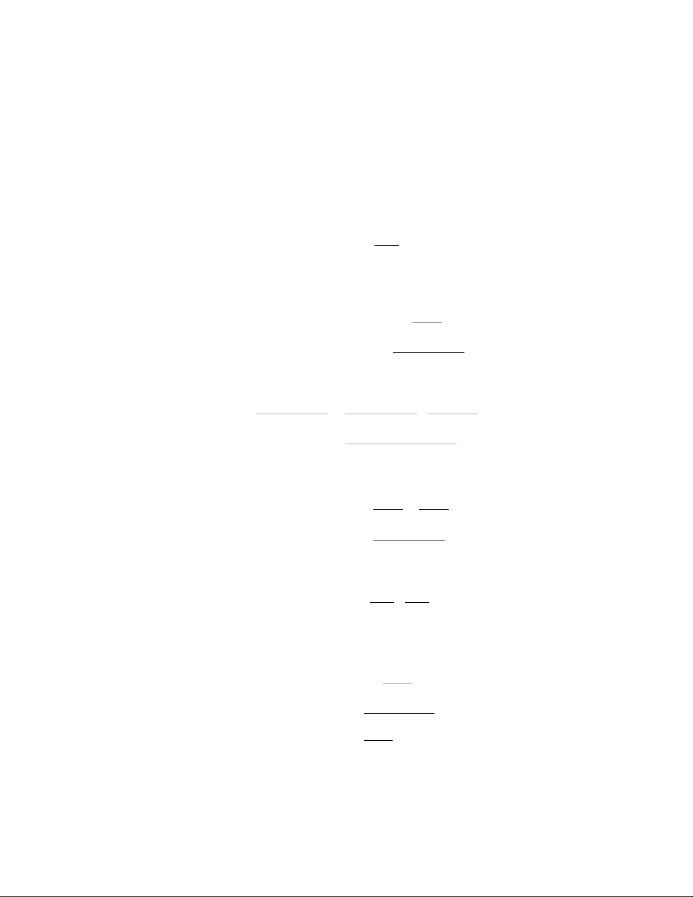
(b) We take the positive square root because 120◦/2 = 60◦lies in the first
quadrant.
cos 120◦
2=r1 + cos 120◦
2
=r1−1/2
2
=r1
4
=1
2
(c) We take the negative square root because 240◦/2 = 120◦lies in the
second quadrant.
cos 240◦
2=−r1 + cos 240◦
2
=−r1−1/2
2
=−r1
4
=−1
2
3.
80

αQuadrant α?α/2 Quadrant α/2? cos α/2
780◦I 390◦I√3/2
1020◦IV 510◦II −√3/2
1140◦I 570◦III −√3/2
1380◦IV 690◦IV √3/2
−60◦IV −30◦IV √3/2
−300◦I−150◦III −√3/2
−420◦IV −210◦II −√3/2
−660◦I−330◦I√3/2
−780◦IV −390◦IV √3/2
4.
sin 15◦=r1−cos 30◦
2
=s1−√3/2
2
=s2−√3
4
=p2−√3
2
cos 15◦=r1 + cos 30◦
2
=s1 + √3/2
2
=s2 + √3
4
=p2 + √3
2
81
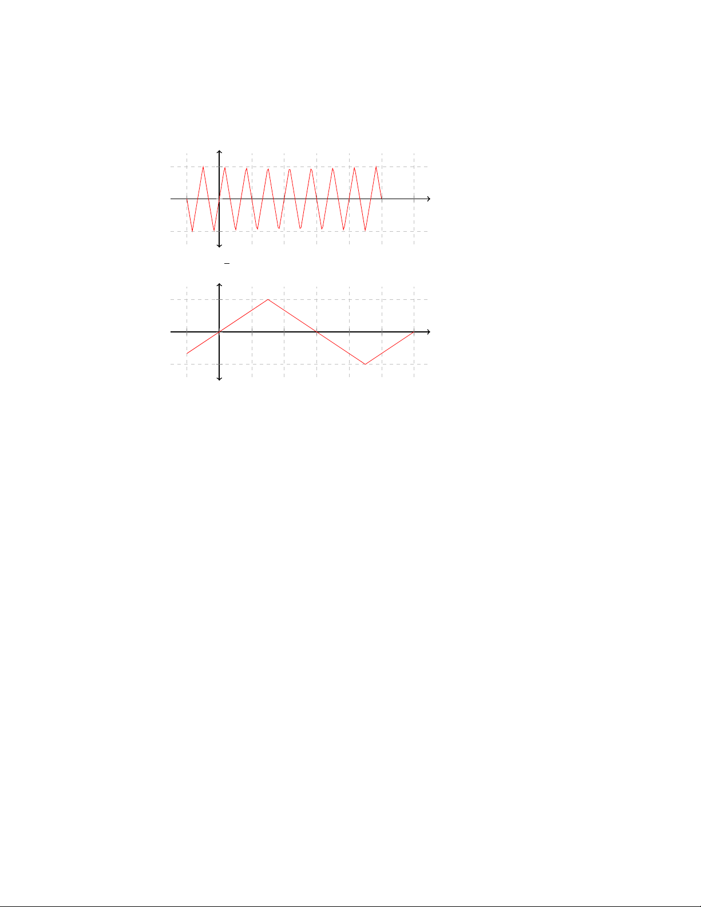
5. Because |cos α| ≤ 1, 1 ±cos α≥0, so the expressions under the square roots
in the sine and cosine half-angle formulas will not be negative.
6. The square root sign in the half-angle formula prevents it from being a
rational trigonometric function, so the Principle of Analytic Continuation
does not apply.
7. (a)
tan α
2tan β
2+ tan α
2tan γ
2+ tan β
2tan γ
2= tan α
2tan β
2+ tan γ
2tan α
2+ tan β
2
= tan α
2tan β
2+ tan γ
2tan α+β
21−tan α
2tan β
2
= tan α
2tan β
2+ 1 −tan α
2tan β
2
= 1
Alternatively, we can recall the extended tangent addition formula de-
rived in Exercise 6 of Section 4 of this chapter:
tan (α+β+γ) = tan α+ tan β+ tan γ−tan αtan βtan γ
1−tan αtan β−tan αtan γ−tan βtan γ
Since α/2 + β/2 + γ/2 = π/2, tan (α/2 + β/2 + γ/2) is undefined. This
implies that the denominator of the tangent addition formula is 0 (as-
suming that none of tan α/2, tan β/2, or tan γ/2 are undefined). There-
fore, we can conclude
tan α
2tan β
2+ tan α
2tan γ
2+ tan β
2tan γ
2= 1.
(b) Following a similar approach as to the previous part, we begin by noting
that sin α+β
2= cos γ
2.
4 cos α
2cos β
2cos γ
2= 4 cos α
2cos β
2sin α+β
2
= 4 cos α
2cos β
2sin α
2cos β
2+ cos α
2sin β
2
= 4 sin α
2cos α
2cos2β
2+ 4 sin β
2cos β
2cos2α
2
= 2 sin αcos2β
2+ 2 sin βcos2α
2
= 2 sin α1 + cos β
2+ 2 sin β1 + cos α
2
= sin α+ sin αcos β+ sin β+ sin βcos α
= sin α+ sin β+ sin (α+β)
= sin α+ sin β+ sin (π−α−β)
= sin α+ sin β+ sin γ
82

Page 152
1. Because 1 + cos αis non-negative, division by 1 + cos αdoes not change the
sign of sin α, which means tan (α/2) and sin α/ (1 + cos α) have the same
sign.
2.
tan α
2=±r1−cos α
1 + cos α
=±r1−cos α
1 + cos α·1−cos α
1−cos α
=±s(1 −cos α)2
1−cos2α
=±s(1 −cos α)2
sin2α
=±1−cos α
sin α
For acute angles α, we need to take the positive branch of the square root so
that the signs of both sides of the half-angle formula agree. By the Principle
of Analytic Continuation, since the positive branch is correct for all acute
angles and both sides of the formula are rational trigonometric expressions,
it is correct for all angles in general, so we have
tan α
2=1−cos α
sin α
Page 153
1.
1
2cos (α−β)−1
2cos (α+β) = 1
2(cos αcos β+ sin αsin β−cos αcos β+ sin αsin β)
=1
2(2 sin αsin β)
= sin αsin β
1
2sin (α+β) + 1
2sin (α−β) = 1
2(sin αcos β+ cos αsin β+ sin αcos β−cos αsin β)
=1
2(2 sin αcos β)
= sin αcos β
83

2.
sin 75◦sin 15◦=1
2cos (75◦−15◦)−1
2cos (75◦+ 15◦)
=1
2cos 60◦−1
2cos 90◦
=1
2·1
2−1
2·0
=1
4
3.
sin 75◦cos 15◦=1
2sin (75◦+ 15◦) + 1
2sin (75◦−15◦)
=1
2sin 90◦+1
2sin 60◦
=1
2·1 + 1
2·√3
2
=2 + √3
4
4. (a)
cos 75◦cos 15◦=1
2cos (75◦+ 15◦) + 1
2cos (75◦−15◦)
=1
2cos 90◦+1
2cos 60◦
=1
2·0 + 1
2·1
2
=1
4
Alternatively, by the cosine subtraction formula, cos 60◦= cos 75◦cos 15◦+
sin 75◦sin 15◦so
cos 75◦cos 15◦= cos 60◦−sin 75◦sin 15◦=1
2−1
4=1
4
Alternatively, using the idea of sine and cosine being cofunctions,
cos 75◦cos 15◦= sin (90◦−75◦) sin (90◦−15◦) = sin 15◦sin 75◦=1
4
For the above two alternative solutions, we apply the result from Ex-
ercise 2 above that sin 75◦sin 15◦= 1/4.
84
(b)
cos 75◦sin 15◦=1
2sin (15◦+ 75◦) + 1
2sin (15◦−75◦)
=1
2sin 90◦−1
2sin 60◦
=1
2·1−1
2·√3
2
=2−√3
4
Alternatively, by the sine addition formula, sin 90◦= sin 75◦cos 15◦+
cos 75◦sin 15◦so
cos 75◦sin 15◦= sin 90◦−sin 75◦cos 15◦= 1 −2 + √3
4=2−√3
4
For the above alternative solution, we apply the result from Exercise 3
above that sin 75◦cos 15◦=2 + √3/4.
5.
2 cos π
4+αcos π
4−α= cos π
4+α+π
4−α+ cos π
4+α−π
4+α
= cos π
2cos 2α
= cos 2α
Alternatively, applying the result of Exercise 8 in Section 3 of this chapter,
2 cos π
4+αcos π
4−α= 2 cos2π
4cos2α−sin2π
4sin2α
= 2 1
2cos2α−1
2sin2α
= cos2α−sin2α
= cos 2α
6.
sin (α+β) sin (α−β) + sin (β+γ) sin (β−γ) + sin (γ+α) sin (γ−α)
=1
2cos 2β−1
2cos 2α+1
2cos 2γ−1
2cos 2β+1
2cos 2α−1
2cos 2γ
= 0
85
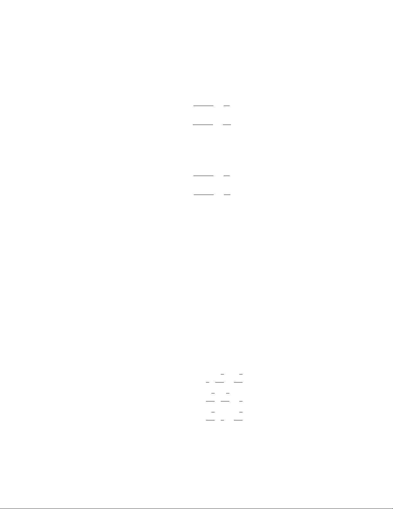
7.
sin αsin (β−γ) + sin βsin (γ−α) + sin γsin (α−β)
=1
2cos (α−β+γ)−1
2cos (α+β−γ) + 1
2cos (β−γ+α)−1
2cos (β+γ−α)
+1
2cos (γ−α+β)−1
2cos (γ+α−β)
= 0
Page 155
1. Recall from the previous section that cos (γ+δ) + cos (γ−δ) = 2 cos γcos δ.
Following Example 54, we let γ= (α+β)/2 and δ= (α−β)/2. Substitut-
ing for γand δ, we arrive at the first formula,
cos α+ cos β= 2 cos α+β
2cos α−β
2
Similarly, we recall that cos (γ−δ)−cos (γ+δ) = 2 sin γsin δ. Performing
the same substitution as above, we obtain
cos β−cos α= 2 sin α+β
2sin α−β
2⇐⇒ cos α−cos β=−2 sin α+β
2sin α−β
2
2.
cos 70◦+ sin 40◦= sin 20◦+ sin 40◦
= 2 sin 20◦+ 40◦
2cos 20◦−40◦
2
= 2 sin 30◦cos (−10◦)
= 2 ·1
2cos 10◦
= cos 10◦
3.
cos 55◦+ cos 65◦= 2 cos 55◦+ 65◦
2cos 55◦−65◦
2
= 2 cos 60◦cos (−5◦)
= 2 ·1
2cos 5◦
= cos 5◦
86

4.
cos 20◦+ cos 100◦+ cos 140◦= 2 cos 100◦+ 20◦
2cos 100◦−20◦
2+ cos 140◦
= 2 cos 60◦cos 40◦+ cos 140◦
= 2 ·1
2cos 40◦+ cos 140◦
= cos 40◦+ cos 140◦
= 2 cos 140◦+ 40◦
2cos 140◦−40◦
2
= 2 cos 90◦cos 50◦
= 0
5.
sin 78◦+ cos 132◦= sin 78◦−cos 48◦
= sin 78◦−sin 42◦
= 2 cos 78◦+ 42◦
2sin 78◦−42◦
2
= 2 cos 60◦sin 18◦
= 2 ·1
2sin 18◦
= sin 18◦
6.
cos 15◦+ sin 15◦
cos 15◦−sin 15◦=sin 75◦+ sin 15◦
sin 75◦−sin 15◦
=2 sin 45◦cos 30◦
2 cos 45◦sin 30◦
= tan 45◦cot 30◦
=√3
7. (a)
sin (α+β) = sin (π−α−β) = sin γ
(b)
cos (α+β) = −cos (π−α−β) = −cos γ
87

(c)
sin 2α+ sin 2β+ sin 2γ= 2 sin (α+β) cos (α−β) + sin 2γ
= 2 sin γcos (α−β) + 2 sin γcos γ
= 2 sin γ(cos (α−β) + cos γ)
= 2 sin γ(cos (α−β)−cos (α+β))
= 2 sin γ(2 sin αsin β)
= 4 sin αsin βsin γ
8.
sin α+ sin α+2π
3+ sin α+4π
3= 2 sin α+π
3cos −π
3+ sin α+4π
3
= sin α+π
3+ sin α+4π
3
= 2 sin α+5π
6cos −π
2
= 0
9. We first note that
sin kα+sin (k+ 2)α= 2 sin (k+ 2)α+kα
2cos (k+ 2)α−kα
2= 2 sin (k+ 1)αcos α.
Therefore,
sin α+ 2 sin 3α+ sin 5α= sin α+ sin 3α+ sin 3α+ sin 5α
= 2 sin 2αcos α+ 2 sin 4αcos α
= 2 cos α(sin 2α+ sin 4α)
= 2 cos α(2 sin 3αcos α)
= 4 cos2αsin 3α.
10.
sin (β−γ)
sin βsin γ+sin (γ−α)
sin γsin α+sin (α−β)
sin αsin β
=sin βcos γ
sin βsin γ−cos βsin γ
sin βsin γ+sin γcos α
sin γsin α−cos γsin α
sin γsin α+sin αcos β
sin αsin β−cos αcos β
sin αsin β
= cot γ−cot β+ cot α−cot γ+ cot β−cot α
= 0
This result also follows from the identity which was proven in Exercise 7 of
the previous section. This can be seen by rewriting the left-hand side of the
equation as a single fraction with a common denominator and noting that
the numerator of this fraction is zero.
88

11.
sin (α−β) + sin (α−γ) + sin (β−γ) = 2 sin 2α−β−γ
2cos γ−β
2+ sin (β−γ)
= 2 sin 2α−β−γ
2cos β−γ
2+ 2 sin β−γ
2cos β−γ
2
= 2 cos β−γ
2sin 2α−β−γ
2+ sin β−γ
2
= 2 cos β−γ
22 sin α−γ
2cos α−β
2
= 4 cos α−β
2sin α−γ
2cos β−γ
2
12.
sin (α+β+γ) + sin (α−β−γ) + sin (α+β−γ) + sin (α−β+γ)
= 2 sin αcos (β+γ) + sin (α+β−γ) + sin (α−β+γ)
= 2 sin αcos (β+γ) + 2 sin αcos (β−γ)
= 2 sin α(cos (β+γ) + cos (β−γ))
= 2 sin α(2 cos βcos γ)
= 4 sin αcos βcos γ
Page 158
1. Let β= 2γ.
sin2β+ cos2β= sin22γ+ cos22γ
=2a
1 + a22
+1−a2
1 + a22
=4a2
1+2a2+a4+1−2a2+a4
1+2a2+a4
=1+2a2+a4
1+2a2+a4
= 1
2.
tan 2β=2a
1−a2
=
2a
1 + a2
1−a2
1 + a2
=sin 2β
cos 2β
89
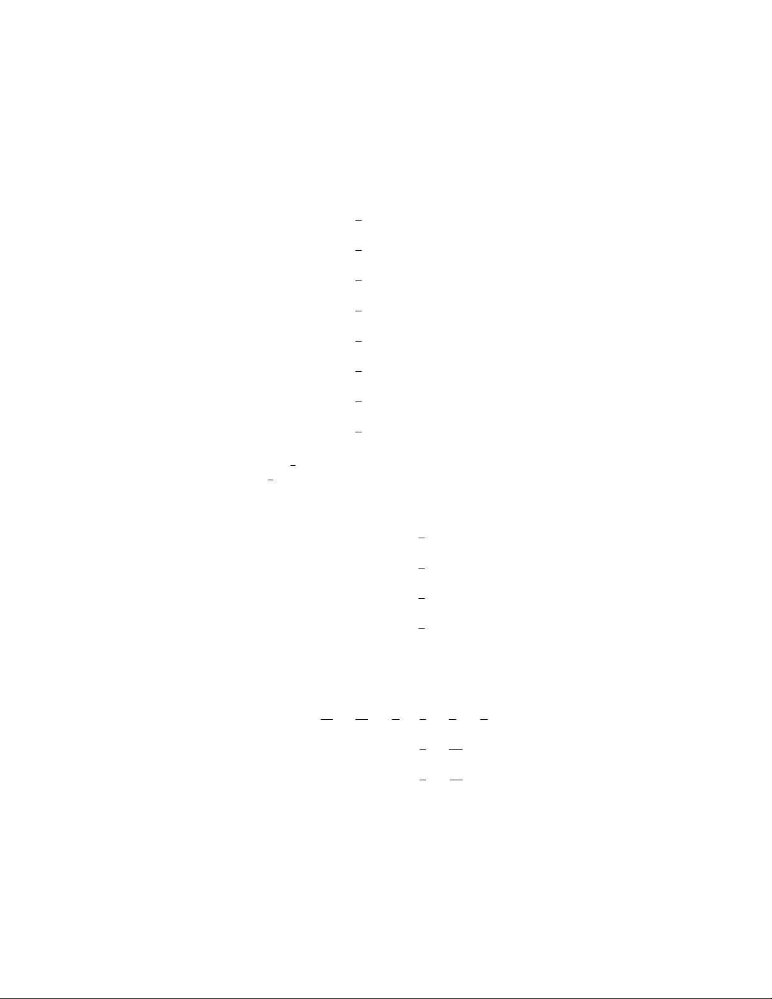
Page 160
1.
sin α=2·2·3
22+ 32=12
13
cos α=22−32
22+ 32=−5
13
These values give the Pythagorean triple 5, 12, 13, provided we take the
absolute value of cos α. However, because cos αis negative, αis not an
acute angle, so it cannot correspond to an angle in a right triangle.
2.
sin α=2·8·5
82+ 52=80
89
cos α=82−52
82+ 52=39
89
This corresponds to the right triangle with legs of 39 and 80 and a hypotenuse
of 89.
3.
(2pq)2+q2−p22= 4p2q2+q4−2q2p2+p4=q4+ 2q2p2+p4=q2+p22
The above shows that q2+p2is the hypotenuse.
Page 161 (First)
1. •sin 20◦cos 20◦≈0.3214
•sin 10◦cos 10◦≈0.1710
•sin 5◦cos 5◦≈0.0868
•sin 1◦cos 1◦≈0.0174
•sin 70◦cos 70◦≈0.3214
•sin 80◦cos 80◦≈0.1710
•sin 85◦cos 85◦≈0.0868
•sin 89◦cos 89◦≈0.0174
2.
sin 30◦cos 30◦=1
2·√3
2=√3
4
sin 45◦cos 45◦=√2
2·√2
2=1
2
sin 60◦cos 60◦=√3
2·1
2=√3
4
90

Page 161 (Second)
1. In the below answers for this question, nrepresents an arbitrary integer.
(a)
sin xcos x=1
2=⇒1
2sin 2x=1
2
=⇒sin 2x= 1
=⇒2x=π
2+ 2nπ
=⇒x=π
4+nπ
(b)
sin xcos x=√3
2=⇒1
2sin 2x=√3
2=⇒sin 2x=√3
Because √3>1, there are no values of xwhich satisfy the given equa-
tion.
(c)
sin xcos x=√3
4=⇒1
2sin 2x=√3
4
=⇒sin 2x=√3
2
=⇒2x=π
2±π
6+ 2nπ
=⇒x=π
4±π
12+nπ
2. (c) has no solution because sin xcos x≤0.5<0.6.
3. sin xcos x=Nhas a solution when |N| ≤ 1/2.
sin xcos x=N=⇒1
2sin 2x=N=⇒sin 2x= 2N
2x= arcsin 2Ngives one solution to the above equation. Another (not
necessarily distinct) solution is 2x=π−arcsin 2N. All solutions to the
equation can be generated by adding an integer multiple of 2πto either of
the above angles. Therefore, the general solution to sin xcos x=Nis
x=1
2arcsin 2N+nπ or x=1
2(π−arcsin 2N) + nπ.
Using the properties of cofunctions, this solution can be written in a slightly
more compact manner as follows:
x=π
4±1
2arccos 2N+nπ
91
Page 162 (First)
1.
sin 30◦+ cos 30◦=1
2+√3
2>1
2+1
2= 1
2.
sin 0 + cos 0 = 1
3.
sin π
4+ cos π
4=√2
2+√2
2=√2
Page 162 (Second)
1. Yes, because 1.414 <√2. (Note: sin x+ cos xmust attain the value 1.414
for some xbecause of the Intermediate Value Theorem).
2. No, because 1.415 >√2.
3. We square both sides of the equation to solve for x.
sin x+cos x=√2 =⇒1+sin 2x= 2 =⇒sin 2x= 1 =⇒2x=π
2+2nπ =⇒x=π
4+nπ
4. Since we know the maximum value of (sin x+ cos x)2is 2, the minimum
value of sin x+cos xcannot be less than −√2. The value of −√2 is attained
when x=5π
4.
sin 5π
4+ cos 5π
4=−√2
2−√2
2=−√2
Page 163 (First)
1. sin x+ cos xis maximized when x+π
4=π
2+ 2nπ, where nis an integer.
Therefore,
x=π
4+ 2nπ
2. The minimum value of sin x+ cos xis −√2. This is achieved when
x=−3π
4+ 2nπ.
Page 163 (Second)
1. Yes. Because sin αand cos αare both positive, αmust be in the first quad-
rant.
2. The minimum value of 3 sin x+ 4 cos xis −5. This occurs when
x=−α−π
2+ 2nπ.
92
3. Let αbe the positive acute angle such that sin α= 7/√53.
2 sin x+ 7 cos x=√53 2
√53 sin x+7
√53 cos x=√53 sin (α+x)
The above shows that the maximum and minimum values of 2 sin x+ 7 cos x
are √53 and −√53, respectively.
Page 164
1.
cos π
16 =v
u
u
t1 + cos π
8
2
=v
u
u
t1 + 1
2p2 + √2
2
=s2 + p2 + √2
4
=1
2r2 + q2 + √2
sin π
16 =v
u
u
t1−cos π
8
2
=v
u
u
t1−1
2p2 + √2
2
=s2−p2 + √2
4
=1
2r2−q2 + √2
2.
93
αcos αsin α
π
16
1
2q2 + p2 + √21
2q2−p2 + √2
π
32
1
2r2 + q2 + p2 + √21
2r2−q2 + p2 + √2
π
64
1
2s2 + r2 + q2 + p2 + √21
2s2−r2 + q2 + p2 + √2
π
128
1
2v
u
u
t2 + s2 + r2 + q2 + p2 + √21
2v
u
u
t2−s2 + r2 + q2 + p2 + √2
Page 166
1. 1
2√2≈0.7071
1
2q2 + √2≈0.9239
1
2r2 + q2 + √2≈0.9809
1
2s2 + r2 + q2 + √2≈0.9952
2.
22q2−√2≈3.0615
23r2−q2 + √2≈3.1214
24s2−r2 + q2 + √2≈3.1365
25v
u
u
t2−s2 + r2 + q2 + √2≈3.1403
94
3. (a)
cos π
12 =r1 + cos (π/6)
2
=s1 + √3/2
2
=1
2q2 + √3
≈0.9659
(b)
cos π
24 =r1 + cos (π/12)
2
=s1 + p2 + √3/2
2
=1
2r2 + q2 + √3
≈0.9914
(c)
cos π
48 =r1 + cos (π/24)
2
=v
u
u
t1 + q2 + p2 + √3/2
2
=1
2s2 + r2 + q2 + √3
≈0.9979
(d)
cos π
96 =r1 + cos (π/48)
2
=v
u
u
u
t1 + r2 + q2 + p2 + √3/2
2
=1
2v
u
u
t2 + s2 + r2 + q2 + √3
≈0.9995
95
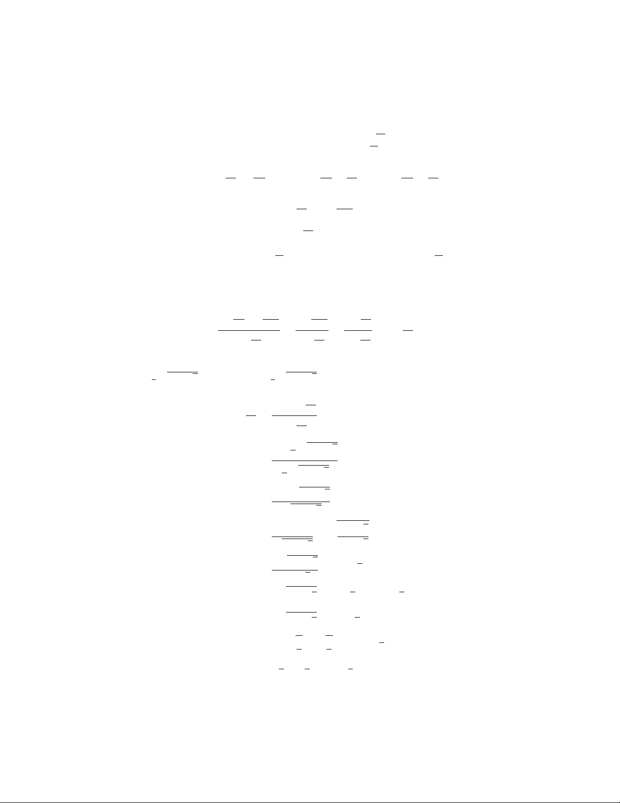
These values approach 1 because for small angles x, cos xgets closer to
1. More formally, the limit of cos xas xapproaches zero is 1.
4. (a)
12 sin π
12 = 6q2−√3≈3.1058
(b)
24 sin π
24 = 12r2−q2 + √3≈3.1326
(c)
48 sin π
48 = 24s2−r2 + q2 + √3≈3.1394
(d)
96 sin π
96 = 48v
u
u
t2−s2 + r2 + q2 + √3≈3.1410
Page 168
1.
1
√1 + √2+1
√2 + √3+. . . +1
√99 + √100 =
99
X
k=1
1
√k+√k+ 1
=
99
X
k=1
1
√k+√k+ 1 ·√k+ 1 −√k
√k+ 1 −√k
=
99
X
k=1
√k+ 1 −√k
=√2−√1+√3−√2+. . . +√100 −√99
=√100 −√1
= 10 −1
= 9
96
2.
1 + 3 + . . . + (2n+ 1) =
n
X
k=0
2k+ 1
=
n
X
k=0
(k+ 1)2−k2
=12−02+22−12+. . . +(n+ 1)2−n2
= (n+ 1)2−02
= (n+ 1)2
=n2+ 2n+ 1
3.
(1 −x)P= (1 −x) (1 + x)1 + x21 + x41 + x81 + x16
=1−x21 + x21 + x41 + x81 + x16
=1−x41 + x41 + x81 + x16
=1−x81 + x81 + x16
=1−x161 + x16
= 1 −x32
Thus,
P=1−x32
1−x= 1 + x+. . . +x31
4.
sin 20◦P= sin 20◦cos 20◦cos 40◦cos 80◦
=1
2sin 40◦cos 40◦cos 80◦
=1
4sin 80◦cos 80◦
=1
8sin 160◦
=1
8sin 20◦
Thus, P=1
8.
97

Page 170
1.
2 sin x(sin x+ sin 3x+. . . + sin 99x) = 2 sin x
49
X
k=0
sin (2k+ 1) x
=
49
X
k=0
2 sin xsin (2k+ 1) x
=
49
X
k=0
cos 2kx −cos (2k+ 2)x
= (cos 0 −cos 2x) + (cos 2x−cos 4x) + . . . + (cos 98x−cos 100x)
= 1 −cos 100x
Thus, the original sum, sin x+. . .+sin 99x, is equal to (1 −cos 100x)/(2 sin x).
Notice that this is equivalent to sin250x/ sin x, which is what would be found
using the formula at the bottom of page 169.
2.
2 sin π
8sin x+. . . + sin x+99π
4= 2 sin π
8
99
X
k=0
sin x+kπ
4
=
99
X
k=0
2 sin π
8sin x+kπ
4
=
99
X
k=0
cos x+k−1
2π
4−cos x+k+1
2π
4
= cos x−π
8−cos x+199π
8
= cos x−π
8−cos x+7π
8
= cos x−π
8+ cos π−x−7π
8
= 2 cos x−π
8
= 2 cos xcos π
8+ 2 sin xsin π
8
Dividing by 2 sin π
8, we find that the original sum is equal to cot π
8cos x+
sin x. Notice that this is equivalent to sin (x+ 99π/8) /sin (π/8), which is
what would be found using the formula at the bottom of page 169.
An alternative way to evaluate this sum is by noticing that the terms of this
sum repeat in periods of 8 because sin x+8π
4= sin (x). Furthermore, the
98

first 8 terms of the sum total to zero (try verifying this yourself using the
sine addition formulas). Therefore, to evaluate the whole sum, all we need
to evaluate is the sum of the last four terms:
sin x+96π
4+ sin x+97π
4+ sin x+98π
4+ sin x+99π
4.
By the periodicity in the sum, we can equivalently evaluate the first four
terms of the sum. Using the sine addition formulas, we find that the sum is
equal to
sin x+ sin x+π
4+ sin x+π
2+ sin x+3π
4
= sin x+√2
2sin x+√2
2cos x+ cos x−√2
2sin x+√2
2cos x
= sin x+ cos x+√2 cos x.
Combining this result with our initial evaluation of this sum shows that
cot π
8= 1 + √2.
3. We begin by multiplying the sum by 2 sin x.
2 sin x(cos 2x+ cos 4x+. . . + cos 2nx) =
n
X
k=1
2 sin xcos 2kx
=
n
X
k=1
sin (2k+ 1)x−sin (2k−1)x
= (sin 3x−sin x) + . . . + (sin (2n+ 1)x−sin (2n+ 1)x)
= sin (2n+ 1)x−sin x
Dividing by 2 sin xgives us the value of the sum as
sin(2n+ 1)x
2 sin x−1
2.
4. We begin by multiplying the sum by 2 sin π
2k.
2 sin π
2kcos π
k+ cos 2π
k+. . . + cos nπ
k=
n
X
j=1
2 sin π
2kcos jπ
k
=
n
X
j=1
sin π
kj+1
2−sin π
kj−1
2
= sin nπ
k+π
2k−sin π
2k
= sin nπ
kcos π
2k+ cos nπ
ksin π
2k−sin π
2k
Dividing by 2 sin π
2k, we find that the value of the sum is
1
2sin nπ
kcot π
2k+ cos nπ
k−1.
99

5. The heights of the perpendiculars are given by sin kπ
12 , where kranges from
1 to 11. We consider this sum multiplied by 2 sin π
24 .
11
X
k=1
2 sin π
24 sin kπ
12 =
11
X
k=1
cos kπ
12 −π
24−cos kπ
12 +π
24
= cos π
24 −cos 23π
24
= 2 cos π
24
Dividing this result by 2 sin π
24 gives the value of the sum as cot π
24 .
Alternatively, we can use the formula for series of sines with angles in arith-
metic progression, setting x= 0, n= 11, α=π/12 to find that the sum of
the altitudes is
sin 6π
12 sin 11π
24
sin π
24
=
sin 11π
24
sin π
24
=
cos π
24
sin π
24
= cot π
24.
Using the half-angle formulas for sine and cosine, we can show that cos π/12 =
1
2p2 + √3 and sin π/12 = 1
2p2−√3. Therefore,
cot π
24 =
1 + cos π
12
sin π
12
=
1 + 1
2p2 + √3
1
2p2−√3
=2 + p2 + √3
p2−√3
=2
p2−√3+s2 + √3
2−√3
=2p2−√3
2−√3+2+√3
= 2q2−√32 + √3+2+√3
= 2q2 + √3 + 2 + √3
= 2 r1
2+r3
2!+2+√3
=√2 + √6 + 2 + √3.
100
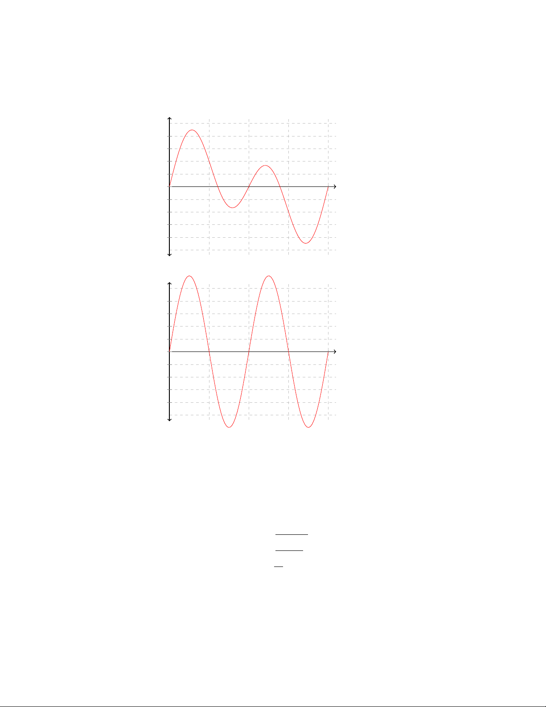
Let’s elaborate on how to evaluate p2 + √3. Suppose p2 + √3 = √a+
√bfor some rational numbers aand b. Then, squaring both sides, we get
2 + √3 = a+ 2√ab +b. Matching the rational and irrational parts, we get
two equations relating aand b:a+b= 2 and 4ab = 3. Solving this system
shows that aand bare 1/2 and 3/2 (the order doesn’t matter because the
equations are symmetric). Thus, we have shown that
q2 + √3 = r1
2+r3
2.
Chapter 8: Graphs of Trigonometric Functions
Page 177
1. Since k= 5, Period is 5, and Frequency is π
5
2. Since k=1
4, Period is 1
4, and Frequency is π
1/4= 4π
3. Since k=4
5, Period is 4
5, and Frequency is π
4/5=5π
4
4. Since k=5
4, Period is 5
4, and Frequency is π
5/4=4π
5
5. Period is 2π
3
x
y
π
2π3π
22π
−1
0
1
6. Period is 2π
1/3= 6π
x
y
1π2π3π4π5π6π
−1
0
1
7. Period is 2π
3/2=4π
3
101
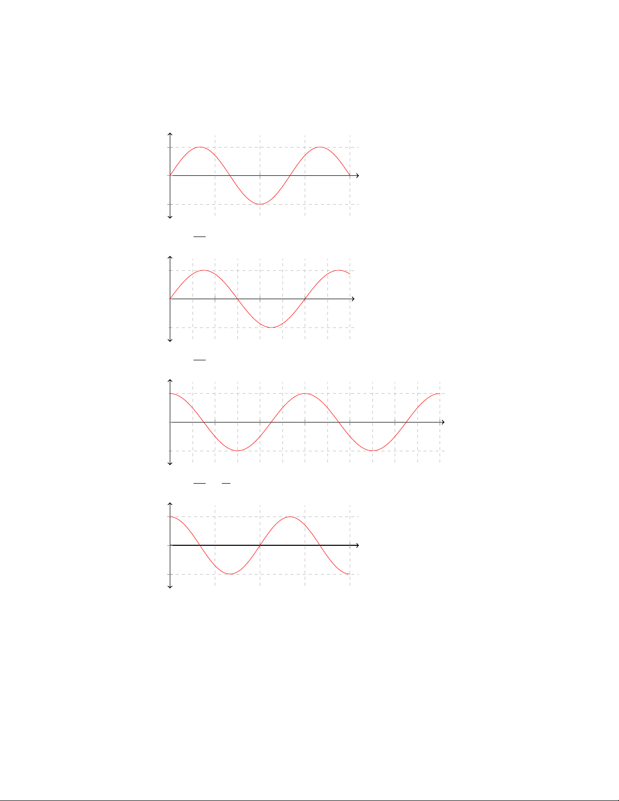
x
y
1π2π
−1
0
1
8. Period is 2π
2/3= 3π
x
y
1π2π3π
−1
0
1
9. Period is 2π
2/3= 3π
x
y
1π2π3π4π5π6π
−1
0
1
10. Period is 2π
3/2=4π
3
x
y
1π2π
−1
0
1
11. For y=f(3x)
102
x
y
−1 0 1 2 3 4 5 6
−1
0
1
For y=f(x
3)
x
y
−1 0 1 2 3 4 5 6
−1
0
1
Page 179
1. y= 2 sin (x)
x
y
1π2π
−2
−1
0
1
2
2. y=1
2sin (x)
x
y
1π2π
−1
0
1
3. y= 3 sin (2x)
103
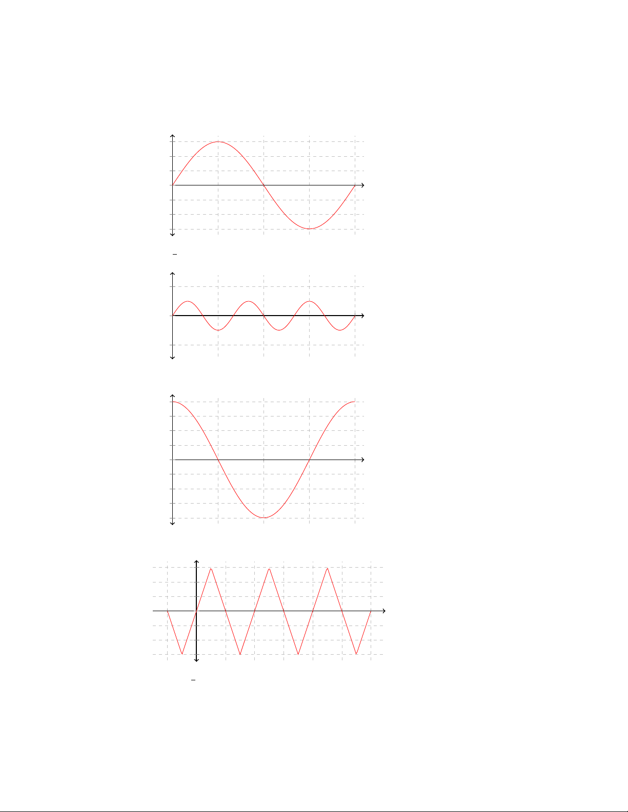
x
y
1π2π
−3
−2
−1
0
1
2
3
4. y=1
2sin (3x)
x
y
1π2π
−1
0
1
5. y= 4 cos (x)
x
y
1π2π
−4
−3
−2
−1
0
1
2
3
4
6. For y= 3f(x)
x
y
−1 0 1 2 3 4 5 6
−3
−2
−1
0
1
2
3
7. For y=1
3f(x)
104
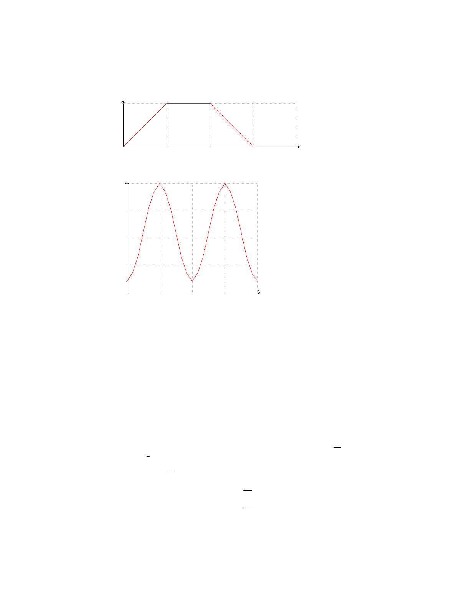
x
y
−1 0 1 2 3 4 5 6
−1
0
1
Page 181
1. y= sin x−π
6
x
y
1π2π
−1
0
1
2. y= sin x+π
6
x
y
1π2π
−1
0
1
3. y= 2 sin x−π
2
x
y
1π2π
−2
−1
0
1
2
4. y=1
2sin x+π
2
105
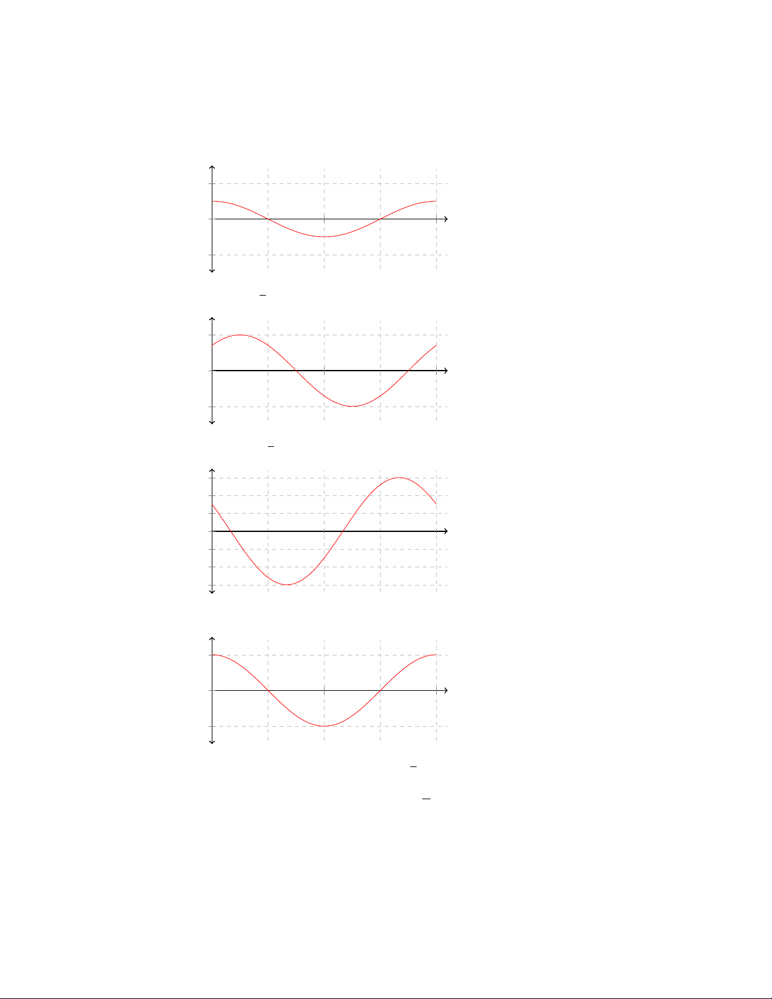
x
y
1π2π
−1
0
1
5. y= cos x−π
4
x
y
1π2π
−1
0
1
6. y= 3 cos x+π
3
x
y
1π2π
−3
−2
−1
0
1
2
3
7. y= sin (x−2x)
x
y
1π2π
−1
0
1
8. Since the sine wave has shifted right by π
3. The equation is
y= sin x−π
3
106
9. Since the sine wave has shifted right by 2π
3. The equation is
y= sin x−2π
3
10. Since the sine wave has shifted left by π
6. The equation is
y= sin x−π
6
11. Note: this looks like the sine wave has shifted right by π
4, but at that point,
the sine wave is on its wave down.
The actual shift is the xintercept on the far left, calculate its location by
π
4−π=−3π
4as it’s half a period away, that is, if 2πradians is one period,
then πradians is a half period
Therefore, the sine wave has shifted left by 3π
4. The equation is
y= sin x+3π
4
Page 183
1. y= sin 1
2x−π
6
x
y
1π2π3π4π
−1
0
1
2. y= sin 1
3x−π
6
x
y
1π2π3π4π
−1
0
1
3. y= cos 2 x+π
3
107
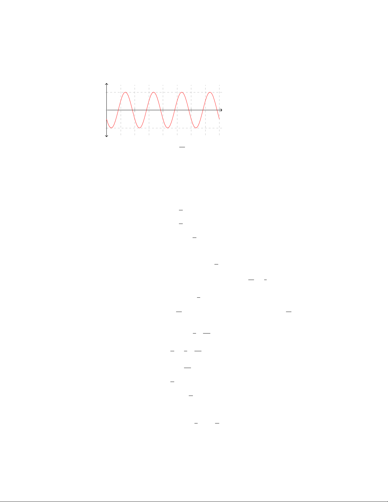
x
y
1π2π3π4π
−1
0
1
4. Since period is π, making k=2π
π= 2, making the equation
y= sin 2(x−β)
To solve for β, substitute x= 0, y =−1, as the sine wave passes point
(0,−1), giving
−1 = sin 2(0 −β)
−1 = sin −2β
−π
2=−2β
π
4=β
β=π
4
Therefore the equation is
y= sin 2 x−π
4
5. Since half period is 2π, its full period is 4πmaking k=2π
4π=1
2, making the
equation
y= sin 1
2(x−β)
To solve for β, substitute x=5π
6, y = 1, as the sine wave passes point ( 5π
6,1),
giving
1 = sin 1
25π
6−β
π
2=1
25π
6−β
π=5π
6−β
π
6=−β
β=−π
6
Therefore the equation is
y= sin 1
2x−π
6
108

Page 186
1. Answer A) equal to sin xsince
sin(x+ 2π) = sin(x+ 2π−2π)
= sin(x)
2. Answer C) equal to −sin xsince
sin(x+ 3π) = sin(x+ 3π−2π)
= sin(x+π)
=−sin(x)
3. Answer B) equal to cos xsince
sin x+9
2π= sin x+9
2π−4π
= sin x+π
2
= cos(x)
4. Answer D) equal to −cos xsince
sin x−π
2=−cos(x)
5. Answer B) equal to cos xsince
sin x−3
2π= sin −3
2π+ 2π
= sin x+π
2
= cos(x)
6. Answer D) equal to −cos xsince
sin x+19
2π= sin x+19
2π−10π
= sin x−π
2
=−cos(x)
109
7. Answer D) equal to −cos xsince
−sin x−19
2π=−sin x+19
2π+ 10π
=−sin x+π
2
=−cos(x)
8. Answer B) equal to cos xsince
sin x+157
2π= sin x+157
2π−78π
= sin x+π
2
= cos(x)
9. Answer D) equal to −cos xsince
sin x−157
2π= sin x−157
2π+ 78π
= sin x−π
2
=−cos(x)
10. Note: there is no question 10 in textbook (printing error?)
11. Using definition that pis called a half-period of function fis f(x+p) =
−f(x), for all values of x which f(x) and f(x+p) are defined
Since cos(x) has period of 2πradians, therefore its half-period is πradians,
or we can compare diagrams
x
y
1π2π3π4π
−1
0
1y= cos(x)
y= cos(x+π)
Which can be seen that cos(x+π) is the same as −cos(x), therefore by
definition, cos xhas a half-period of πradians
110
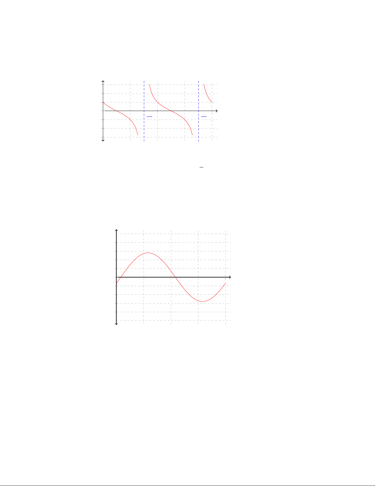
For y= tan x
tan(x+π) = sin(x+π)
cos(x+π)
=−sin x
−cos x
= tan x
So πis period of y= tan x
For y= cot x
cot(x+π) = cos(x+π)
sin(x+π)
=−cos x
−sin x
= cot x
So πis period of y= cot x
12. Using definition that qis called a half-period of function fis f(x+q) =
−f(x), for all values of x which f(x) and f(x+q) are defined
f(x+ 2q) = f(x+q+q)
=−f(x+q)
=−(−f(x))
=f(x)
Therefore if qis half period of some function f, then 2qis a period of f
13. (a)
cos (x+kπ/2) = cos x+π(4n+ 1)
2
= cos (x+ 2nπ +π/2)
= cos(x+π/2)
=−sin x
(b)
cos (x+kπ/2) = cos x+π(4n+ 2)
2
= cos (x+ 2nπ +π)
= cos(x+π)
=−cos x
111
(c)
cos (x+kπ/2) = cos x+π(4n+ 3)
2
= cos x+ 2nπ +3π
2
= cos(x+3π
2)
= cos(x−π
2)
= sin x
(d)
cos (x+kπ/2) = cos x+π(4n)
2
= cos (x+ 2nπ)
= cos x
14. (a) As the equation has a negative coefficient, we need to shift this by a
half-period of πradians
y=−2 sin x
= 2 sin(x+π)
Comparing coefficients, we get a= 2 and k= 1 and β=π
(b) As the equation has a negative coefficient, we need to shift this by a
half-period of πradians
y= 2 sin(x−π/3)
= 2 sin(x−π/3 + π)
= 2 sin(x+ 2π/3)
Comparing coefficients, we get a= 2 and k= 1 and β=−2π/3
(c) As the equation has a negative coefficient, we need to shift this by a
half-period of πradians
y=−2 sin(x+π/4)
= 2 sin(x+π/4 + π)
= 2 sin(x+ 5π/4)
Comparing coefficients, we get a= 2 and k= 1 and β=−5π/4
112
(d) As the equation is a cosine function, we need to re-express as a sine
function
3 cos x= 3 sin(x+π/2)
Comparing coefficients, we get a= 3 and k= 1 and β=π/2
(e) As the equation is a cosine function, we need to re-express as a sine
function
y= 3 cos(x−π/6)
= 3 sin(x−π/6 + π/2)
= 3 sin(x+π/3)
Comparing coefficients, we get a= 3 and k= 1 and β=−π/3
(f) As the equation is a cosine function, we need to re-express as a sine
function. Then re-express as a postive amplitude
y=−3 cos(x−π/6)
=−3 sin(x−π/6 + π/2)
= 3 sin(x−π/6 + π/2 + π)
= 3 sin(x+ 4π/3)
Comparing coefficients, we get a= 3 and k= 1 and β=−4π/3
15.
cos(x−π/5)
x
y
1π2π3π4π
−1
0
1
16. We need to shift to the right by π
2
We need to shift to the left by 3π
2
113

17. To express kas an odd number, let k= 2n+ 1 for any integer n
tan (x+kπ/2) = tan x+π(2n+ 1)
2
= tan (x+ 2nπ +π/2)
= tan (x+π/2)
=sin(x+π/2)
cos(x+π/2)
=−cos x
sin x
=−cot x
To express kas an even number, let k= 2nfor any integer n
tan (x+kπ/2) = tan x+π(2n)
2
= tan (x+ 2nπ)
= tan x
Page 188
1. a) y= tan x−π
6
x
y
1π2π
−3
−2
−1
0
1
2
3
2π
3
2π
3
b) y= 3 tan (x)
x
y
1π2π
−3
−2
−1
0
1
2
3
π
2
3π
2
c) y= cot x+π
4
114
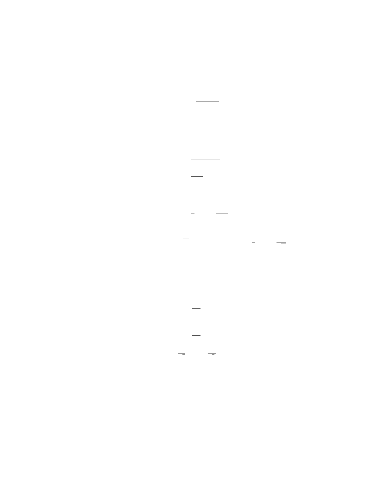
x
y
1π2π
−3
−2
−1
0
1
2
3
3π
4
7π
4
2. Not really, although there is a trigonometric identity where
tan x= cot π
2−x
This equation has a negative xinside. Therefore it won’t be in form of
y= cot(x+ϕ) (note the positive x inside)
Page 189
1. (a) For y=y1+y2
x
y
1π2π
−4
−3
−2
−1
0
1
2
3
4
(b) For y=y1+y2
115

x
y
1π2π
−4
−3
−2
−1
0
1
2
3
4
(c) For y=y2+y3
x
y
1π2π
−4
−3
−2
−1
0
1
2
3
4
2. Graph 1a appear to be a sinusoidal function
Page 191
1. For y= 2 sin x+3 cos x, compare with standard form y=Asin kx+Bcos kx,
we get values of A= 2, B= 3, and k= 1
To convert to the other standard form y=asin k(x+ϕ), we calculate its
amplitude by
a=pA2+B2
=p22+ 32
=√13
116

While its phase ϕ=α/k is calculated by
cos α=A
√A2+B2
cos α=2
√13
α= arccos(2/√13)Since k= 1
ϕ= arccos(2/√13)
Therefore the equation is y=√2 sin (x+ϕ) where ϕ= arccos 2√13
Since amplitude is √2, then its maximum value is √2
2. Since amplitude is √13, then its maximum value is √13
3. For y= sin x+ cos x, compare with standard form y=Asin kx +Bcos kx,
we get values of A= 1, B= 1, and k= 1
To convert to the other standard form y=asin k(x+ϕ), we calculate its
amplitude aby
a=pA2+B2
=p12+ 12
=√2
While its phase ϕ=α/k is calculated by
cos α=A
√A2+B2
cos α=1
√2
α=π/4
Since k= 1
ϕ=π/4
Therefore the equation is y=√2sin (x+π/4)
Since amplitude is √2, then its maximum value is √2
4. For y= sin x−cos x, compare with standard form y=Asin kx +Bcos kx,
we get values of A= 1, B= 1, and k= 1
To convert to the other standard form y=asin k(x−β), we calculate its
amplitude by
a=pA2+B2
=p12+ 12
=√2
117
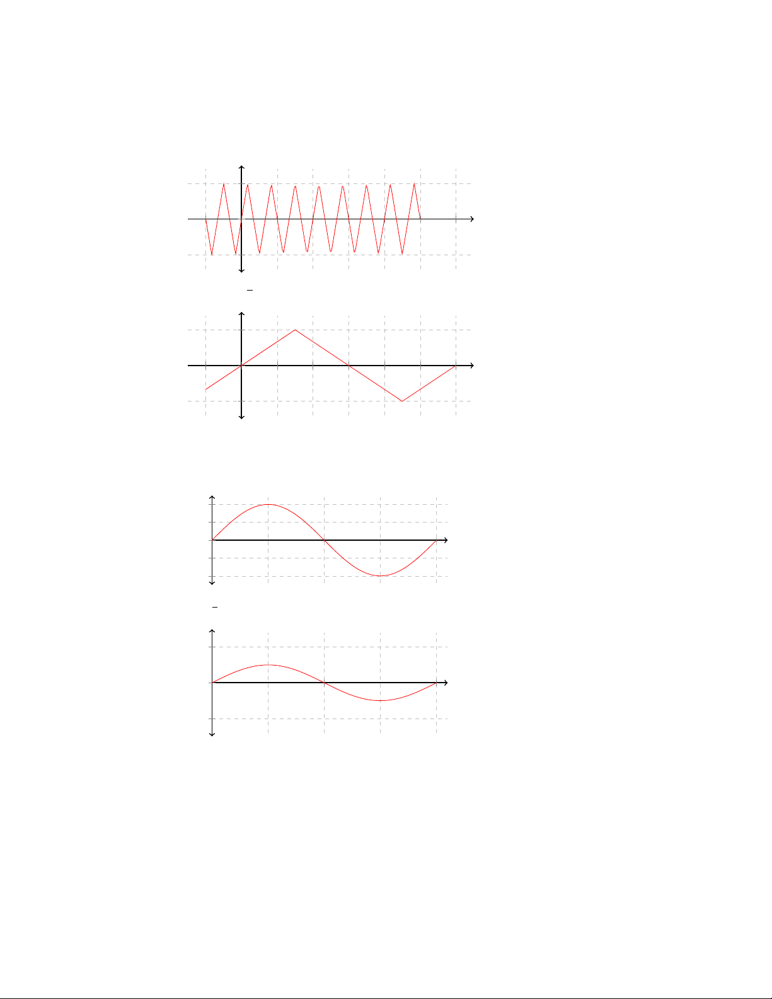
While its phase β=α/k is calculated by
cos α=A
√A2+B2
cos α=1
√2
α=π/4
Since k= 1
β=π/4
Therefore the equation is y=√2 sin (x−π/4)
Since amplitude is √2, then its maximum value is √2
5. For y= 4 sin x+3 cos x, compare with standard form y=Asin kx+Bcos kx,
we get values of A= 4, B= 3, and k= 1
To convert to the other standard form y=asin k(x+ϕ), we calculate its
amplitude by
a=pA2+B2
=p42+ 32
=√25
= 5
While its phase ϕ=α/k is calculated by
cos α=A
√A2+B2
cos α=4
5
α= arccos(4
5)
Since k= 1
ϕ= arccos(4
5)
Therefore the equation is y= 5 sin (x+ϕ) where ϕ= arccos(4/5)
Since amplitude is 5, then its maximum value is 5
6. For y= sin 2x+3 cos 2x, compare with standard form y=Asin kx+Bcos kx,
we get values of A= 1, B= 3, and k= 2
118
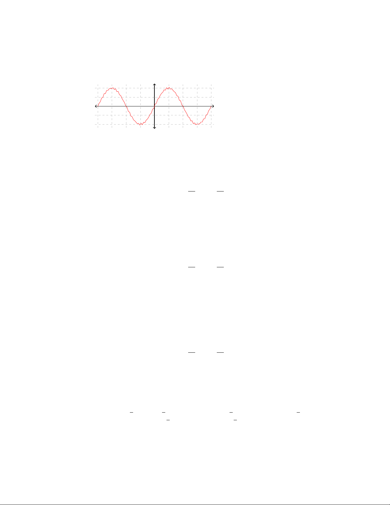
To convert to the other standard form y=asin k(x+ϕ), we calculate its
amplitude by
a=pA2+B2
=p12+ 32
=√10
While its phase ϕ=α/k is calculated by
cos α=A
√A2+B2
cos α=1
√10
α= arccos(1/√10)
Since k= 2
ϕ=1
2arccos( 1
√10)
Therefore the equation is y=√10 sin (x+ϕ) where ϕ=1
2arccos( 1
√10 )
7. For y= sin(x−π/4), compare with standard form y=asin k(x−β), we get
values of a= 1, β=π/4, and k= 1
To convert to the other standard form y=Asin kx −Bcos kx, we need to
solve for Aand Busing the definition A=acos kβ and B=asin kβ
A= 1 cos(π/4)
=1
√2
B= 1 sin(π/4)
=1
√2
Therefore the equation is y=1
√2sin x−1
√2icos x
8. For y= 4 sin(x+π/6), compare with standard form y=asin k(x+ϕ), we
get values of a= 4, ϕ=π/6, and k= 2
To convert to the other standard form y=Asin kx +Bcos kx, we need to
119

solve for Aand Busing the definition A=acos kβ and B=asin kβ
A= 4 cos(2π/6)
= 4 ×1/2
= 2
B= 4 sin(2π/6)
= 4 ×√3/2
= 2√3
Therefore the equation is y= 2 sin 2x+ 2√3 cos 2x
Page 194
1. (a)
y= 2 sin(x+π/6) + cos(x+π/6)
y= 2 (sin xcos π/6 + cos xsin π/6) + (cos xcos π/6−sin xsin π/6)
y= 2 √3
2sin x+1
2cos x!+ √3
2cos x−1
2sin x!
y=√3 sin x+ cos x+√3
2cos x−1
2sin x
y=√3−1
2sin x+ 1 + √3
2!cos x
(b)
y= 2 sin 2(x+π/4) −cos 2(x+π/4)
y= 2 sin(2x+π/2) −cos(2x+π/2)
y= 2 (sin 2xcos π/2 + cos 2xsin π/2) + (cos 2xcos π/2−sin 2xsin π/2)
y= 2 (sin 2x×0 + cos 2x×1) + (cos 2x×0−sin 2x×1)
y= 2 cos 2x−sin 2x
y=−sin 2x+ 2 cos 2x
2. (a)
y1+y1= 2 sin x+ sin(x−π/4)
= 2 sin x+ (sin xcos π/4−cos xsin π/4)
= 2 sin x+1
√2sin x−1
√2cos x
=2 + 1
√2sin x−1
√2cos x
(b) The functions have different frequencies, which would need advanced
mathematics topics such as Fourier Series
120
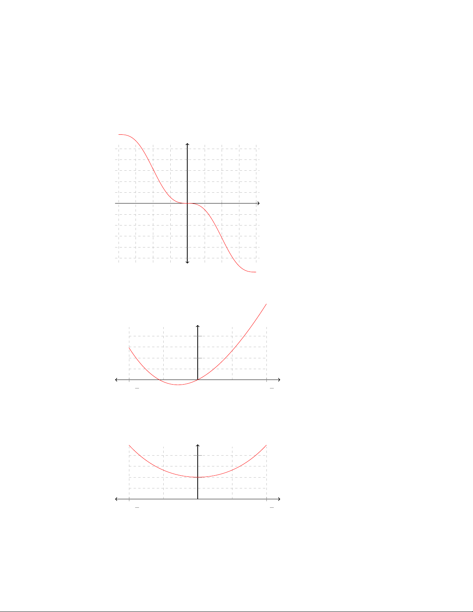
Page 196
1.
y=−x+ sin x
x
y
1π2π
−5
−4
−3
−2
−1
0
1
2
3
4
5
2.
y=x2+ sin x
x
y
-π
2
π
2
1
2
3.
y=x2+ cos x
Note this is an even function since f(−x) = f(x)
x
y
-π
2
π
2
1
2
121
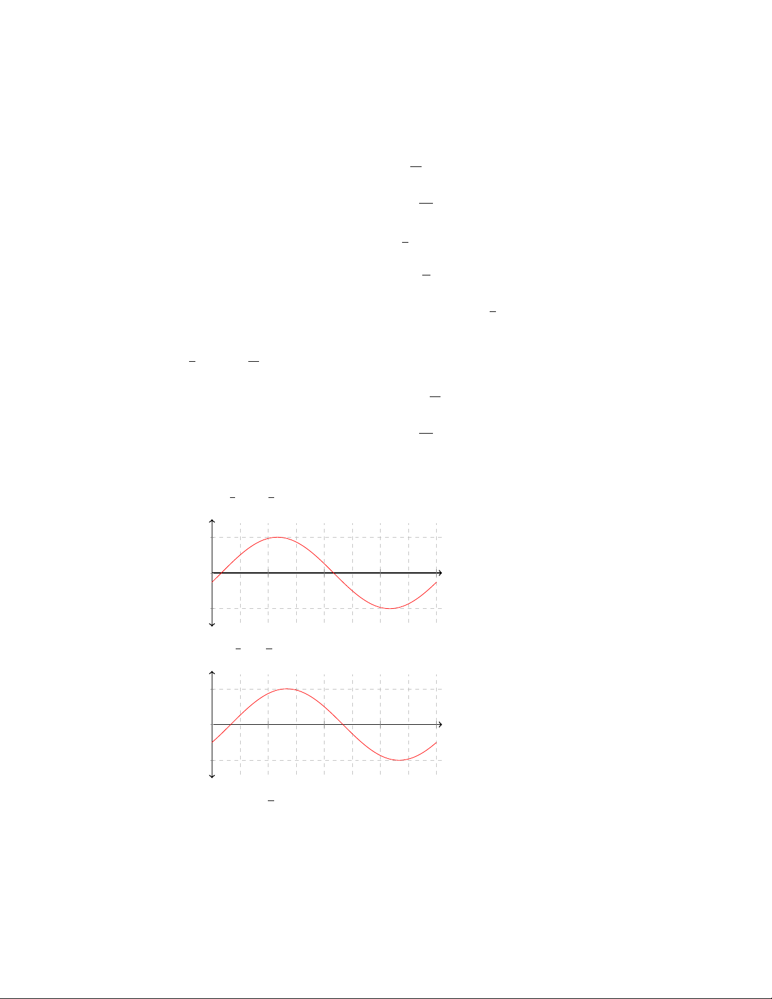
4.
y=x3+ sin x
x
y
-π
2
π
2
−5
−4
−3
−2
−1
0
1
2
3
4
5
5.
y=x2+1
10 sin x
x
y
-π
2
π
2
1
2
6.
y= cos x+1
10 sin 20x
x
y
−2π−1π1π2π
−2
−1
1
2
7.
y= 2 sin x+1
10 sin 20x
122
x
y
−2π−1π1π2π
−2
−1
1
2
Page 197
1. In y= sin 2x+ sin 3x. The period of sin 2xhas form of m(2π/2), while the
period of sin 3xhas form of n(2π/3).
To be a period of both parts
m×2π
2=n×2π
3
3m= 2n
Using m= 2 and n= 3. the period of each part will be 2πradians
2. In y= sin 3x+ sin 6x. The period of sin 3xhas form of m(2π/3), while the
period of sin 6xhas form of n(2π/6).
To be a period of both parts
m×2π
3=n×2π
6
6m= 3n
2m= 1n
Using m= 1 and n= 2. the period of each part will be 2π/3 radians
3. In y= sin 4x+ sin 6x. The period of sin 4xhas form of m(2π/4), while the
period of sin 6xhas form of n(2π/6).
To be a period of both parts
m×2π
4=n×2π
6
6m= 4n
3m= 2n
Using m= 2 and n= 3. the period of each part will be πradians
4.
5. In y= sin √2x+ sin 3√2x. The period of sin √2xhas form of m(2π/√2),
while the period of sin 3√2xhas form of n(2π/3√2).
123

To be a period of both parts
m×2π
√2=n×2π
3√2
3m= 1n
Using m= 1 and n= 3. the period of each part will be 2π/√2 = √2π
radians
Page 199
1.
y= sin x−1
2sin 2x+1
3sin 3x
x
y
−2π−1π1π2π
−1
1
2.
y= sin x−1
2sin 2x+1
3sin 3x−1
4sin 4x+1
5sin 5x
x
y
−2π−1π1π2π
−1
1
3. The limit will be a sawtooth wave
x
y
−2π−1π1π2π
−1
1
124

4.
y= cos x−1
9cos 3x+1
25 cos 5x−1
49 cos 7x
t
y
−2π−1π1π2π
−1
1
Therefore, the limiting function is the triangular function
x
y
−2π−1π1π2π
−1
1
Page 200
1. The graph will be
t
y
1 2 3 4 5 6
1
2. The graph will be
t
y
1 2 3 4 5 6
−1
1
3. The graph will be
125

t
y
8 16 24 32
8
4. The graph will be
t
y
6 12 18 24
4
40
Tide is rising fastest at 3rd, 4th, 15th, and 16th hour
Tide is receding fastest at 9th, 10th, 21st, and 22nd hour
Tide is rising slowest at 1st, 5th, 13th and 17th hour
Tide is receding slowest at 7th, 11th, 19th and 23rd hour
Page 203
1. Substituing xvalues
•sin π= 0
•sin 2π= 0
•sin 3π= 0
•sin 4π= 0
2. For y= sin 4πx, the value of kis k= 4π, therefore the period is 2π
4π, so the
period is 1
2
3. Since period is 2π
k, if period is 3
3 = 2π
k
k=2π
3
126
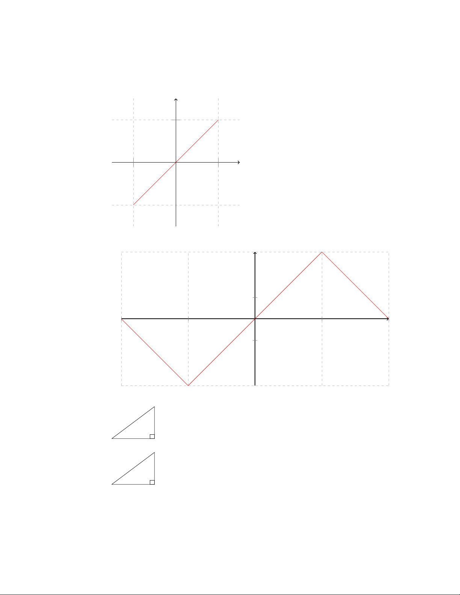
Therefore the equation is y= sin 2π
3x
4. Since period is 2π
k, if period is 2
2 = 2π
k
k=2π
2
Therefore the equation is y= sin πx
5. Since period is 2π
k, if period is n
n=2π
k
k=2π
n
Therefore the equation is y= sin 2π
nx
Page 205
1. The period is estimated to be 12 months by distance between peaks at t= 8
and t= 20. Therefore the value for kis k= 2π/20
The amplitude is estimated to be mid-way between peak (15) and trough
(9.5), which is (15 −9.5)/2=2.75
Therefore the equation is y= 2.75 sin π
10 (x−π)
2. If (a) is in northern hemisphere, (b) and (c) would be in northern hemi-
sphere too as the peaks occur at similar month. (d) would be in southern
hemispehere as the wave is shifted by half-period
3. For all graphs, the ’average’ number of daylight hours occur at month 4,
month 10, month 16, and month 22
Chapter 9: Inverse Functions and Trigonometric
Equations
Page 213
1. (a) arcsin 0.5 = π/6
(b) arccos 0.5 = π/3
(c) arctan 0.5 = π/4
(d) arcsin(−√3/2) = −π/3
(e) arccos(−√3/2) = 5π/6
(f) arctan(−√3) = −π/3
127

(g) Note: not valid as the domain of arcsin xis −1≤x≤1
2. (a)
sin(arcsin 0.5)
= sin(π/6)
=−0.5
(b)
cos(arccos 0.5)
= cos(π/3)
= 0.5
(c)
tan(arctan(−1))
= tan(π/4)
=−π/4
(d)
arcsin(sin(π/3))
= arcsin(−√3/2)
=π/3
(e)
arccos(cos 11π/6)
= arccos(−√3/2)
=π/6
3. Let θ= arccos bwhich mean cos θ=b. If we assume angle θis acute, then
we can draw a right angle triangle
√1−b2
1
b
θ
Giving sin θ=√1−b2when 0 ≤θ≤π/2
For π/2≤θπ, sin θ= sin(π−θ), making the sign positive
For π≤θ3π/2, sin θ=−sin(θ−π), making the sign negative
For 3π/2≤θ2π, sin θ=−sin(2θ−θ), making the sign negative
128
4. Let θ= arcsin bwhich mean sin θ=b. If we assume angle θis acute, then
we can draw a right angle triangle
b
1
√1−b2
θ
Giving tan θ=b
√1−b2when 0 ≤θ≤π/2
For π/2≤θπ, tan θ=−tan(π−θ), making the sign negative
For π≤θ3π/2, tan θ= tan(θ−π), making the sign positive
For 3π/2≤θ2π, tan θ=−tan(2θ−θ), making the sign negative
5. Let θ= arctan bwhich mean tan θ=b. If we assume angle θis acute, then
we can draw a right angle triangle
b
√1 + b2
1
θ
Giving cos θ=1
√1+b2when 0 ≤θ≤π/2
For π/2≤θπ, cos θ=−cos(π−θ), making the sign negative
For π≤θ3π/2, cos θ=−cos(θ−π), making the sign negative
For 3π/2≤θ2π, cos θ= cos(2θ−θ), making the sign positive
6. Since angle αis acute, then we can draw a right angle triangle
a
c
b
α
β
Note that sin α=a/b and cos β=a/b, and β=π/2−α
sin α= cos β
arccos(sin α) = β
arccos(sin α) = π/2−α
For π/2≤α≤π, the expression sin αbecomes sin(π−α), therefore making
arccos(sin α) = arccos(sin(π−α))
=π/2−(π/2−α)
=α
129
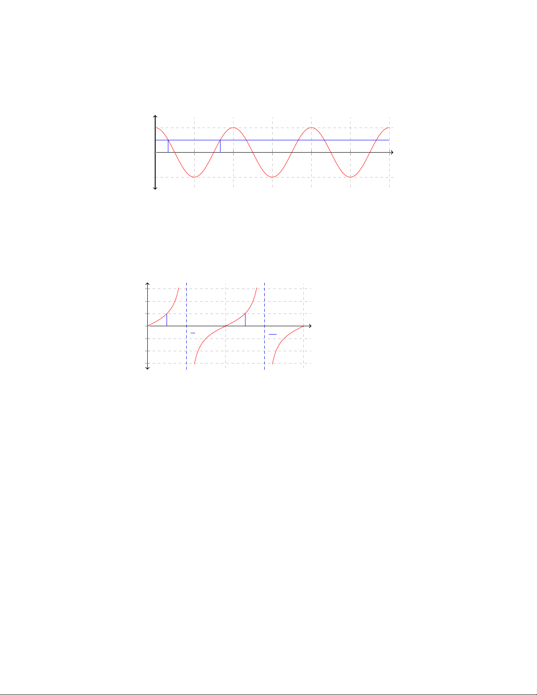
For π≤α≤3π/2, the expression sin αbecomes −sin(α−π), therefore
making
arccos(sin α) = arccos(−sin(α−π))
= arccos(sin(−α+π))
=π/2−(−α+π)
=α−π/2
For 3π/2≤α≤2π, the expression sin αbecomes −sin(2π−α), therefore
making
arccos(sin α) = arccos(−sin(2π−α))
= arccos(sin(−2π+α))
= arccos(sin(α))
=π/2−α
7. Note that the angles for parts (a) to (e) are less than π/2, so no change in
angle is needed, unlike (f)
(a) arcsin(sin π/11) = π/11
(b) arcsin(sin 2π/11) = 2π/11
(c) arcsin(sin 3π/11) = 3π/11
(d) arcsin(sin 4π/11) = 4π/11
(e) arcsin(sin 5π/11) = 5π/11
(f)
arcsin(sin 6π/11)
= arcsin(sin(π−6π/11))
= arcsin(sin 5π/11)
= 5π/11
8. Graph of y= cos(arccos x)
130

x
y
−1 1
1
9. Graph of y= arccos(cos x)
x
y
−2π−1π1π2π
−1π
1π
10. Letting α= arcsin 3/5 and β= arcsin 5/13. Then drawing the triangles
3
5
4
α
5
13
12
β
131
sin(α+β) = sin αcos β+ cos αsin β
= 3/5×12/13 + 4/5×5/13
= 56/65
11. Letting α= arctan aand β= arctan b. Therefore we have tan α=aamd
tan β=b
tan(α+β) = tan α+ tan β
1−tan αtan β
=a+b
1−ab
12. Let tan α= 1/3 and tan β= 1/2 and tan γ= 1
tan(α+β) = tan α+ tan β
1−tan αtan β
tan(α+β) = 1/3+1/2
1−1/3×1/2
tan(α+β)=1
But Since both tan(α+β) = 1 and tan γ= 1. Therefore α+β=γ
Note: I think the author meant Question 11 instead of ’Problem 8’
13. Using plane geometry, draw another row of squares underneath the diagram
and draw lines AH and HC.
Note that the lengths of AH and HC are the same, making triangle AHC
an isosceles triangle, therefore CAH =ACH
Since triangle AHG and HEC is congruent with triangle BCD,BAH =β,
and HCE =β
Since triangle F CA is congruent with triangle ACD,F CA =α
Therefore
F CA +ACH +HCE = 90◦
α+ACH +β= 90◦
ACH = 90◦−α−β
Since γ= 45◦,CAH =α+βand CAH =ACH
α+β= 90◦−α−β
2(α+β) = 90◦
α+β= 45◦
α+β=γ
132

αβγ
A B
C
D
E
G
H
Note: I think the author meant Question 12 instead of ’Problem 9’
Page 220
1. From the graph, sin x > 1/2 when π/6≤x≤5π/6 and 13π/6≤x≤17π/6
2. Using the general equation πk + (−1)k(α) for any integer k
For sin x=−1/2, the value for αis arcsin(−1/2) = −π/6, so the solution is
πk + (−1)k(−π/6)
3. Using the general equation 2nπ ±(α) for any integer n
For cos x=√2/2, the value for αis arccos(√2/2) = π/4, so the solution is
2πn ±π/4
4. Using the general equation nπ + (α) for any integer n
For tan x= 1, the value for αis arctan(1) = π/4, so the solution is πn +π/4
5. Using the general equation πk + (−1)k(α) for any integer k
For sin x=−1, the value for αis arcsin(−1) = −π/2, so the solution is
πk + (−1)k(−π/2)
Page 221
1. Using the general equation πk + (−1)k(α) for any integer k
For sin x= sin π/5, the value for αis π/5, so the solution is πk +(−1)k(π/5)
2. Using the general equation πk + (−1)k(α) for any integer k
For sin x= sin π/2, the value for αis π/2, so the solution is πk +(−1)k(π/2)
133

3.
x
y
1π2π3π4π5π6π
−1
0
1
cos α
α2π−α
Since period of cos xis 2π, the solutions are 2πn +αand 2πn −αfor any
integer n
4. Using the general equation 2nπ ±(α) for any integer n
For cos x= cos π/5, the value for αis π/5, so the solution is 2πn ±π/5
5. Since period of tan xis π, then if αis a solution, then the general equation
for solutions are α+πn for any integer n
x
y
1π2π
−3
−2
−1
0
1
2
3
π
2
3π
2
αα+π
6. Using the general equation nπ + (α) for any integer n
For tan x= tan π/5, the value for αis π/5, so the solution is πn +π/5
7. Using the general equation πk + (−1)k(α) for any integer k
sin x=−sin α
sin x= sin(−α)
x=πk + (−1)k(−α)
8. Using the general equation 2nπ ±(α) for any integer n
cos x=−cos α
cos x= cos(π−α)
x= 2nπ ±(π−α)
9. Using the general equation πk + (−1)k(α) for any integer k
sin x= sin α
sin x= sin(α)
x=πk + (−1)k(α)
134

Page 225
1. Using the general equation πk + (−1)k(α) for any integer k
sin 2x= 1
2x=πk + (−1)k×arcsin 1
2x=πk + (−1)k×π/2
x=1
2πk + (−1)k×π/2
2. Using the general equation πk + (−1)k(α) for any integer k
sin x/2=1/2
x/2 = πk + (−1)k×arcsin 1/2
x/2 = πk + (−1)k×π/6
x= 2 πk + (−1)k×π/6
3.
cos x= sin 2x
cos x= 2 sin xcos x
0 = 2 sin xcos x−cos x
0 = cos x(2 sin x−1)
Therefore there are two set of solutions. Using general solutions 2nπ ±(α)
cos x= 0
x= 2nπ ±(arccos 0)
x= 2nπ ±(π/2)
and πk + (−1)k(α)
2 sin x−1 = 0
sin x= 1/2
x=πk + (−1)k(arcsin 1/2)
x=πk + (−1)k(π/6)
Note: I think the question is supposed to be cos x= sin2x?
135
4.
sin x= sin 3x
sin x= sin(2x+x)
sin x= sin 2xcos x+ cos 2xsin x
sin x= 2 sin xcos xcos x+ (cos2x−sin2x) sin x
sin x= 2 sin x(1 −sin2x) + (1 −sin2x−sin2x) sin x
sin x= 2 sin x−2 sin3x+ sin x−2 sin3x
0 = −4 sin3x+ 2 sin x
0 = −2 sin x(2 sin2−1)
Therefore there are multiple sets of solutions to solve and using the general
equation πk + (−1)k(α)
sin x= 0
x=πk + (−1)k(arcsin 0)
x=πk
The other sets of solutions are
2 sin2x−1=0
sin2x= 1/2
sin x=±1/√2
For sin x= 1/√2
x=πk + (−1)k(arcsin 1/√2)
x=πk + (−1)k×π/4
For sin x=−1/√2
x=πk + (−1)k(arcsin −1/√2)
x=πk + (−1)k× −π/4
Note: I think the questions is supposed to be sin x= sin3x?
136

5.
cos x= sin 4x
cos x= 2 sin 2xcos 2x
cos x= 2 ×2 sin xcos x×(cos2x−sin2x)
cos x= 4 sin xcos x×(1 −sin2x−sin2x)
0 = 4 sin xcos x×(1 −2 sin2x)−cos x
0 = cos x4 sin x(1 −2 sin2x)−1
0 = cos x−8 sin3x+ 4 sin x−1
Therefore there are multiple sets of solutions to solve and using the general
equation πk + (−1)k(α) and 2nπ ±(α)
cos x= 0
x= 2nπ ±arccos 0
x= 2nπ ±π/2
Solving −8 sin3x+ 4 sin x−1 = 0 requires using cubic functions, which is
advanced level and is beyond this book’s level
Note: I think the question is supposed to be cos x= sin 4x?
6.
26 sin2x+ cos2x= 10
26 sin2x+ 1 −sin2x−10 = 0
25 sin2x−9=0
(5 sin x+ 3)(5 sin x−3) = 0
Therefore there are multiple sets of solutions to solve and using the general
equation πk + (−1)k(α)
For 5 sin x+ 3 = 0
5 sin x+ 3 = 0
sin x=−3/5
x=πk + (−1)k(arcsin −3/5)
For 5 sin x−3=0
5 sin x−3=0
sin x= 3/5
x=πk + (−1)k(arcsin 3/5)
137

7.
cos2x−cos x= sin2x
cos2x−cos x= 1 −cos2x
2 cos2x−cos x−1=0
(2 cos x+ 1)(cos x−1) = 0
Therefore there are multiple sets of solutions to solve and using the general
equation 2πn ±(α)
For 2 cos x+ 1 = 0
2 cos x+ 1 = 0
cos x=−1/2
x= 2πn ±arccos(−1/2)
x= 2πn ±2π/3
For 2 cos x−1=0
2 cos x−1=0
cos x= 1/2
x= 2πn ±arccos(1/2)
x= 2πn ±π/3
8.
3 tan2x= 12
tan2x= 4
tan2x−4=0
(tan x+ 2)(tan x−2) = 0
Therefore there are multiple sets of solutions to solve and using the general
equation πk + (α)
For tan x+ 2 = 0
tan x+ 2 = 0
tan x=−2
x=πk + arctan −2
For tan x−2=0
tan x−2=0
tan x= 2
x=πk + arctan 2
138
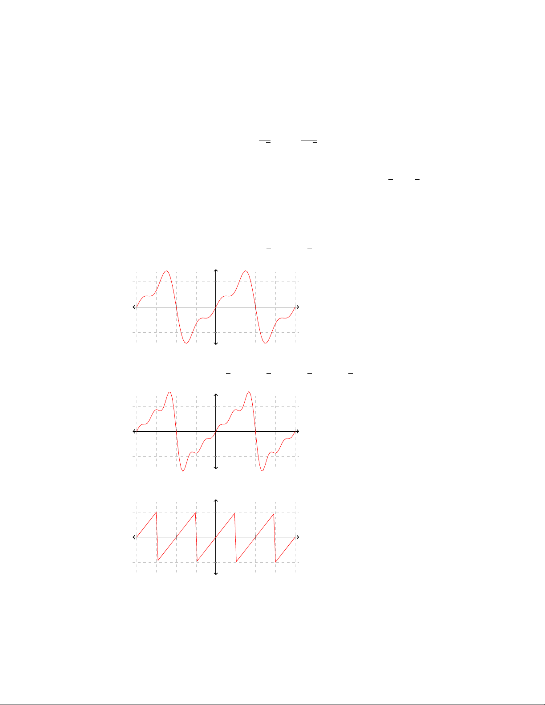
9.
cos 2x= 2 sin2x
cos2x−sin2x= 2 sin2x
1−sin2x−sin2x= 2 sin2x
1−4 sin2x= 0
(1 −2 sin x)(1 + 2 sin x) = 0
Therefore there are multiple sets of solutions to solve and using the general
equation πk + (−1)k(α)
For 1 −2 sin x= 0
1−2 sin x= 0
sin x= 1/2
x=πk + (−1)karcsin 1/2
x=πk + (−1)kπ/6
For 1 + 2 sin x= 0
1 + 2 sin x= 0
sin x=−1/2
x=πk + (−1)karcsin −1/2
x=πk + (−1)k(−π/6)
10.
tan2x= cot x
tan3x= 1
tan3x−1 = 0
(tan x−1)(tan2x+ tan x+ 1) = 0
Therefore there are multiple sets of solutions to solve and using the general
equation πk +α
For tan x−1=0
tan x−1=0
tan x=1
x=πk + arctan 1
x=πk +π/4
139
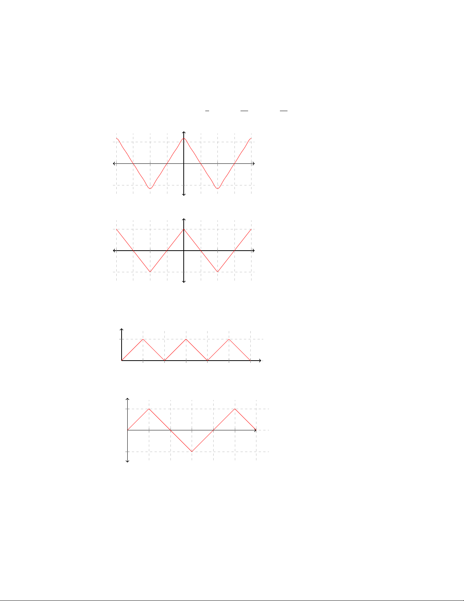
For tan2x+ tan x+ 1 = 0, apply quadratic formula
tan x=−1±p12−4(1)(1)
2(1)
tan x=−1±√−3
2
Which does not have any solutiosn as the number inside the square root is
negative
11.
5
cos2x= 7 tan x+ 3
5 sec2x= 7 tan x+ 3
5(tan2x+ 1) = 7 tan x+ 3
5 tan2x+ 5 = 7 tan x+ 3
5 tan2x−7 tan x+ 2 = 0
Apply quadratic formula
tan x=7±p49 −4(5)(2)
2(5)
tan x=7±3
10
Therefore there are multiple sets of solutions to solve and using the general
equation πk +α
For tan x=7+3
10
tan x= 1
x=πk + arctan 1
x=πk +π/4
For tan x=7−3
10
tan x= 2/5
x=πk + arctan 2/5
12.
√3 tan2x+ 1 = (1 + √3) tan x
(√3 tan x+ 1)(tan x+ 1) = 0
140

Therefore there are multiple sets of solutions to solve and using the general
equation πk +α
For √3 tan x+ 1 = 0
√3 tan x+ 1 = 0
√3 tan x=−1
tan x=−1/√3
x=πn + arctan −1/√3
x=πn + (−π/6)
For tan x+ 1 = 0
tan x+ 1 = 0
tan x=−1
x=πn + arctan −1
x=πn + (−π/4)
13. For Solution 1, re-express the equations such that
with n
x=π/6+2πn/3
with n+1
=π/6+2π(n+ 1)/3
=π/6+2πn/3+2π/3
= 5π/6+2πn/3
with n+2
=π/6+2π(n+ 2)/3
=π/6+2πn/3+4π/3
= 9π/6+2πn/3
= 3π/2+2πn/3
Which corresponds to each line of Solution 2, provided that the number n for
Solution 1 is multiples of 3
Page 227
1. If α= 1.6 then
x=α−tan α
≈35.8325
141

Since near x=π/2, the tangent will be very flat and only reaches the x-axis
after travelling a long distance
2. If α=π/4 then
x=α−tan α
≈ −0.2146
Since the tangent is intersecting x axis to the left
Note, the smaller the α, the closer to it intersecting x-axis at x= 0
If α= 0.1 then
x=α−tan α
≈ −0.000334
3. To solve for location of R where x= 0 and noting x≈tan xfor small x
value
x=α−tan α
0 = α−tan α
tan α=α
α= 0
Therefore R will be at origin when we take a tangent at x= 0
4. if x=π/2, then the tangent will be horizontal, therefore not intersecting
with x-axis at all
If x is a bit smaller than π/2, then the tangent will intersect with x-axis to
the left (far away)
If x is a bit bigger than π/2, then the tangent will intersect with x-axis to
the right (far away)
Page 229
1. Using A≈h
sin h/2, where h=π/n
Using n= 4, so h=π/4 gives A≈π/4
sin π/8, which is 2.05234
Using n= 8, so h=π/8 gives A≈π/8
sin π/16 , which is 2.01291
2. Since area between 0 ≤x≤πis approximately 2, threfore the area under
curve y= sin xfrom x= 0 to x=π/2 would be around 1
142
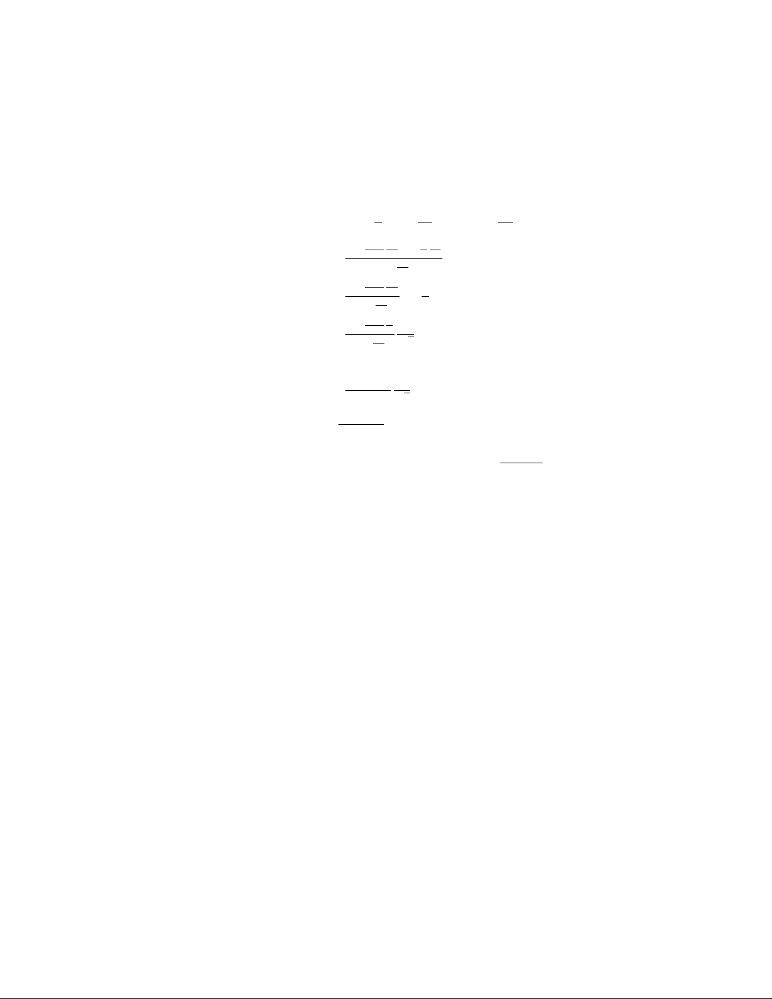
3.
hsin x1+hsin x2+hsin x3+··· +hsin xm
=hsin π
n+ sin 2π
n+··· + sin nπ
2π
=hsin n+1
2
π
2nsin n
2
π
2n
sin π
2n
=hsin n+1
2
π
2n
sin π
2n
sin π
4
=hsin n+1
n
π
4
sin π
2n
1
√2
if n is very large
≈hsin π/4
sin π/2n
1
√2
≈h
2 sin h/2
letting n= 8, giving h=π/8, gives approximate area of π/8
2 sin π/16 ≈1.00645
143